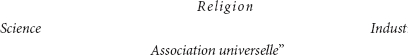
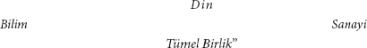

"Hakikaten, burada mesele aynı zamanda koca bir yığını göstermek olmasa... kalemi fırlatıp atardık... Şimdi de o" (Mundt'un "Toplum tarihi" [Geschichte der Gesellschaft]) "aynı kibirle halkın geniş okur kitlesinin karşısına çıkıyor. Bu okur kitlesi, alnında sosyal sözcüğünü taşıyan her şeyin üstüne büyük bir açlıkla atılıyor; zira doğru bir sezgi ona bu küçük sözcükte geleceğin büyük sırlarının saklı olduğunu söylüyor. Dolayısıyla yazarın üzerine iki kat fazla sorumluluk düşüyor ve işe acemice koyulursa eğer, iki kat fazla azarlanmayı hak ediyor!"
"Fransa ve İngiltere'nin sosyal yazınının fiili icraatları hakkında, Bay L. Stein'in ona sunduklarının dışında kesinlikle hiçbir şey bilmediğinden dolayı azarlayacak değiliz. Stein'in kitabı, yayınlandığı dönemde kabul görebildi... Ama bugün hâlâ... Saint-Simon üzerine dem vurmak, Bazard ve Enfantin'i Saint-Simonculuğun iki kolu olarak adlandırmak, ardından Fourier'i getirmek, Proudhon hakkında sığ gevezelikleri tekrarlamak vb!.. Buna rağmen, hiç olmazsa sosyal fikirlerin doğuşu özgün ve yeni bir şekilde tanımlanmış olsaydı yine de göz yummaya razıydık."
Bay Grün, Mundt'un "Toplum Tarihi"nin eleştirisine bu fodul, Rhadamanthysvari654 hükümle başlıyor ("Yeni Anekdot", sf. 122, 123).
Okur, Bay Grün'ün sanatsal yeteneği karşısında hayret içinde kalmış olsa gerek. Yukarıdaki maskenin altında sakladığıysa, o tarihte henüz doğmamış kitabının özeleştirisinden ibaret.
Bay Grün bize hakiki sosyalizmin Genç Alman[160] yazarcılığı ile iç içe geçişinin eğlenceli piyesini sergiliyor. Yukarıda sözü edilen kitap, bir hanımefendiye yazılmış mektuplar biçimindedir. Bundan ötürü bile okur, hakiki sosyalizmin ince fikirli tanrılarının, "genç edebiyat"ın gülleriyle mersin çiçeklerinden yapılma taçlarla gezindiklerini tahmin etmiştir. Hemen birkaç gül koparalım:
"Carmagnole, kendi kendini söylüyordu kafamın içinde... her halükârda Carmagnole'un bir Alman yazarının kafasının içinde, tümden yerleşmese de orada kahvaltı edebilmesi bile korkunç bir şey." (sf. 3)
"Yaşlı Hegel yanımda olsaydı, kulaklarına yapışırdım: Hani, doğa tinin başkalığıydı? Hani o miskindi?" (sf, 11)
"Brüksel bir bakıma Fransız Konvansiyonunun bir suretidir: Bir dağ partisi, bir de vadi partisi vardır." (sf. 24)
"Siyasetin Lüneburg kırları." (sf. 80)
"Rengârenk, şiirsel, tutarsız, fantastik krizalit.655" (sf. 82)
"Restorasyonun liberalizmi, asalak bir bitki misali Temsilciler Meclisi'nin sıralarına dolanan köksüz kaktüs." (sf. 87, 88)
Kaktüsün ne "köksüz" ne de "asalak bir bitki" olması, bu güzel tabloya zeval vermediği gibi, ne "rengârenk", ne "şiirsel" ne de tutarlı "krizalitlerin" ya da pupaların olması da bir öncekine vermez.
"Bense kendimi bu hercümercin içinde" (Cabinet Montpensier'deki[177] gazeteler ve gazete yazarları içinde) "kulübe ya da asma kütüğü kurulabilecek yerler var mı, öfkeli Tanrılarla makul bir anlaşmaya varmak mümkün mü öğrenmek için güvercinlerini havaya salan ikinci bir Nuh gibi hissediyorum." (sf. 259)
Bay Grün, burada gazete muhabiri faaliyetinden söz ediyor olsa gerek.
"Camile Desmoulins, bir insandı. Kurucu Meclis, dar kafalılardan oluşuyordu. Robespierre, meziyetli bir manyetizmacıydı. Modern tarih, tek kelimeyle, épicier'lere656 ve manyetizmacılara karşı yürütülen bir ölüm kalım savaşıdır!!!" (sf. 311)
"Mutluluk bir artıdır, ama x kuvvetindeki bir artıdır." (sf. 203)
Demek ki mutluluk = +x. Bu, yalnızca Bay Grün'ün estetik matematiğinde bulunabilecek bir formül.
"Emeğin örgütlenmesi; o nedir? Ve halklar sfenkslere bin gazete sesiyle yanıt verdiler... Fransa şarkının kıtasını söylerken, Almanya, eski mistik Almanya anti-kıtayı söyler." (sf. 259)
"Kuzey Amerika, bana Eski Dünya'dan bile daha tiksindirici geliyor; çünkü bu dar kafalılar dünyasının egoizmi arsız bir sağlığın al rengini taşıyor... çünkü orada her şey o kadar yüzeysel, o kadar köksüz, hatta o kadar taşralı diyesim geliyor... Amerika'ya Yeni Dünya diyorsunuz; oysa o tüm eskilerin en eskisi, bizim eskimiş giysilerimiz orada caka satıyor." (sf. 101, 324)
Şimdiye kadar yalnızca, giyilmeyen Alman çoraplarının orada giyildiğini biliyorduk; ne var ki bu çoraplar "caka" satamayacak kadar kalitesizdir.
"Bu kurumların mantıksal olarak sağlam garanticiliği." (sf. 461)
Böylesi çiçekler yüreğini neşeyle doldurmuyorsa eğer
Bir "İnsan" olmaya hakkın yok senin![178]
Ne zarif bir art niyet! Ne küstah bir safdillik! Estetiği baştan sona ne kahramanca bir eşeleme! Ne Heinevari bir kayıtsızlık ve dahilik!
Okuru yanılttık. Bay Grün'ün edebiyatı hakiki sosyalizmin bilimini süslemiyor, aksine bilim bu edebi gevezelikler arasındaki dolgu malzemesini oluşturuyor. Deyim yerindeyse bunların "sosyal arka planını" oluşturuyor.
Bay Grün'ün, "Feuerbach ve Sosyalistler" ("Alman Yurttaş Almanağı", sf. 74) başlıklı bir makalesinde aşağıdaki beyanatlara rastlanır:
"Feuerbach'ı zikretmek, Verulamlı Bacon'dan bugüne felsefenin bütün çalışmalarını zikretmiş olmak demektir; felsefenin hem son tahlilde ne istediğini hem de ne anlama geldiğini ifade etmiş olmak demektir, dünya tarihinin nihai sonucu olarak İnsan'ı görmek demektir. Emek ücretini, rekabeti, kurumların ve anayasaların kusurluluğunu gündeme getirmektense böyle yapmak daha güvenli –çünkü daha esaslı– bir şekilde işe koyulmuş olunur... Biz İnsan'ı kazandık; dinden, ölü düşüncelerden, pratikteki tüm sürümleri dâhil olmak üzere kendisine yabancı tüm varlıklardan yakasını kurtarmış olan insanı, saf, sahici insanı kazandık."
Bu tek bir cümle, Bay Grün'den ne tür bir "güven" ve "esaslılık" bekleneceğini tamamen açıklığa kavuşturuyor. O küçük sorunlarla uğraşmaz. Feuerbach'ta yazılı olduğu şekliyle, Alman felsefesinin vardığı sonuçlara sarsılmaz bir inançla donanmış olarak Bay Grün hakiki sosyalizmin tüm kendini beğenmişliği içinde Brüksel ve Paris'e yolculuk eder. Yani, dünya tarihinin nihai hedefinin "İnsan", "saf, sahici insan" olduğu; dinin, feragat edilen insani öz olduğu, insani özün insani öz ve her şeyin ölçütü olduğu inancıyla donanmış olarak. Alman sosyalizminin (yukarı bakınız) diğer hakikatleriyle de donanmış olarak; yani, paranın, ücretli emeğin vs. insani özün özverileri oldukları, Alman sosyalizminin Alman felsefesinin gerçekleşmesi ve yurtdışındaki sosyalizmin ve komünizmin teorik hakikati olduğu inancıyla donanmış olarak.
Bay Grün'ün hakiki sosyalizmin ve Alman biliminin methi için çaldığı şiddetli trombon salvoları, bu bağlamda diğer dindaşlarının ürettiği her şeyi aşıyor. Hakiki sosyalizm bağlamında, bu övgülerin yürekten yapıldığı aşikâr. Bay Grün'ün mütevazılığı ona, başka bir hakiki sosyalistin kendisinden önce "Yirmi Bir Forma"da, "Yurttaş Almanağı"nda ve "Yeni Anekdot"ta telaffuz etmediği tek bir cümle bile sarf etmesine izin vermiyor. Evet, tüm kitabının, "Yirmi Bir Forma"nın 74.-88. sayfalarında Hess tarafından verilen Fransız toplumsal hareketinin yapılanma şemasını doldurmak ve böylece söz konusu eserin 88. sayfasında dile getirilen ihtiyaca yanıt vermek dışında hiçbir amacı yoktur.[179] Fakat Alman felsefesine düzülen methiyelere gelince, bu felsefe bunları, Grün'ün onun hakkındaki cehaletinin büyüklüğü oranında takdir etmelidir. Diğer dünyevi milletlerle karşılaştırıldığında hakiki sosyalistlerin ulusal gururu, "İnsan"ın, "insani öz"ün diyarı olarak Almanya'yla duydukları gurur Grün'de zirveye ulaşmaktadır. Hemen bunlara dair birkaç tadımlık örnek verelim:
"Ama yine de, bütün hepsi, Fransızlar ve İngilizler, Belçikalılar ve Kuzey Amerikalılar önce bizden öğrenmek zorunda değil mi, bilmek istiyorum." (sf. 28)
Şimdi bu daha da geliştiriyor:
"Kuzey Amerikalılar bana tamamen yavan görünüyorlar ve sahip oldukları tüm yasal özgürlüklere rağmen sosyalizmi muhtemelen önce bizden öğrenmek durumunda kalacaklar." (sf. 101)
Bilhassa, 1829'dan beri kendi sosyalist-demokrat –kendi iktisatçıları Cooper'in daha 1830'da mücadele etmeye başladığı– okullarına[180] sahip olalı beri.
"Belçikalı demokratlar! Yoksa sen onların biz Almanların yarısı kadar yol aldığını mı sanıyorsun? Daha yeni onlardan biriyle, özgür insanlığın gerçekleşmesinin hayal olduğunu düşünen biriyle kapıştım!" (sf. 28)
Burada "İnsan"ın, "insani-öz"ün, "insanlığın" milliyeti, Belçika milleti karşısında yayılıp palazlanıyor.
"Siz Fransızlar! Ta ki onu anlayana kadar Hegel'i rahat bırakın." (Lerminier'in[181] aslında son derece zayıf hukuk felsefesi eleştirisinin Hegel'i, Bay Grün'ün ister kendi imzasıyla olsun isterse de "Ernst von der Haide" imzasıyla olsun yazdığı her şeyden daha fazla anladığını kanıtladığını düşünüyoruz) "Önce, bir sene boyunca kahve içmeyin, şarap içmeyin; hissiyatınızı heyecan veren herhangi bir tutkuyla ateşlemeyin; bırakın Guizot yönetsin ülkeyi ve Cezayir Fas'ın egemenliğinin altına girsin" (Fransızlar onu bıraksalar bile Cezayir, Fas'ın egemenliği altına nasıl girecekse artık!); "tavan arasında oturup 'Mantık'la 'Fenomenoloji'yi çalışın bakalım. Nihayet bir yılın bitiminde, bir deri bir kemik kalmış, gözleriniz kan çanağına dönmüş bir halde inip sokaklara çıktığınızda ve sözgelimi ilk züppe ya da çığırtkanla çarpıştığınızda, kafanızın karışmasına izin vermeyin. Zira siz artık büyük ve kudretli insanlar haline geldiniz; sizin tininiz, mucizevi" (!) "özsularla beslenmiş bir meşe ağacına benzer. Gözünüzü üzerine çevirdiğiniz her şey en gizli zaaflarını ifşa edecek; yaratılmış tinler olmanıza rağmen doğanın kalbine sızacaksınız. Bakışınız ölümcül, sözünüz dağları yerinden oynatır; diyalektiğiniz, en keskin giyotinden daha kesin. Hôtel de Ville'in önüne mi dikildiniz, burjuvazi tarihe karışmış olacak; Palais Bourbon'a[182] mı yaklaştınız, orası yerle bir olacak ve Temsilciler Meclisi'nin tamamı nihilum album657 halinde dağılıp kaybolacak; Guizot ortadan yok olacak, Louis Philippe'in benzi solup tarihsel bir karaltıya dönüşecek ve bütün bu yerle bir olan momentlerin içinden özgür toplumun mutlak ideası muzaffer bir edayla yükselecek. Şaka değil, Hegel'i ancak önce siz kendiniz Hegel olursanız alt edebilirsiniz. Daha önce de dediğim gibi: Moor'un sevgilisi yalnızca Moor'un eliyle ölebilir658." (sf. 115,116)
Bu hakiki sosyalist cümleleri sarmalayan edebi ıtırı herkes fark edecektir. Bay Grün, tüm hakiki sosyalistler gibi, Fransızların yüzeyselliği hakkındaki o eski gevezelikleri yeniden ortaya sürmeyi unutmuyor:
"Ne zaman yakınımda bulunsa, Fransız tinini yetersiz ve yüzeysel bulmaya mahkûmum ben." (sf. 371)
Bay Grün, kitabının, Alman sosyalizmini, Fransız sosyalizminin eleştirisi olarak yüceltmeyi amaçladığını bizden saklamıyor:
"Günümüz Alman yazınının ayak takımı, sosyalist çabalarımızı, Fransızların hatalarının bir taklidi olmakla itham ediyor. Şimdiye kadar kimse bunu, tek bir sözle bile karşılık vermeye değer görmedi. Bu ayak takımı, bu kitabı okuduğunda utanmak zorunda kalacak; hâlâ bir utanma duygusuna sahipse tabii. Alman sosyalizminin, Fransız sosyalizminin eleştirisi olduğunu, Alman sosyalizminin Fransızları yeni contrat social'in659 mucidi saymak şöyle dursun, onları kendilerini önce Alman bilimi ile tamamlamaya davet ettiğini rüyasında görse inanmazdı herhalde. Şu sıralar burada Paris'te, Feuerbach'ın 'Hıristiyanlığın Özü'nün bir çevirisi yapılıyor. Alman okulu Fransızlara esenlik versin! Ülkenin ekonomik durumundan, buradaki siyasetin hal ve vaziyetinden ne doğarsa doğsun, gelecekte insani bir yaşama ulaşma yeteneğine ancak ve ancak hümanist dünya görüşü sahiptir. Apolitik, bozuşmuş Alman halkı, halk bile olmayan bu halk, geleceğin inşasının köşe taşını koymuş olacak." (353)
Kuşkusuz, bir ülkenin "ekonomik durumu ve siyasetinin hal ve vaziyetinden ne" "doğduğu"nu, "insani-öz"le bu denli sıkı fıkıyken bir hakiki sosyalistin bilmesine gerek yoktur.
Hakiki sosyalizmin müridi olarak Bay Grün, diğer mürit kardeşleri gibi, başka halkların cehaletiyle Almanların mutlak bilgeliğini karşılaştırmakla yetinmez. Eski yazınsal pratiğinin yardımıyla, çeşitli sosyalist, demokrat ve komünist partilerin temsilcilerine en berbat seyyah-adabıyla musallat olmakta ve her şeylerine burnunu sokup çıkardıktan sonra karşılarına hakiki sosyalizmin havarisi olarak çıkmaktadır. Artık yapması gereken tek şey, onları aydınlatmak, onlara özgür insanlık hakkında en derinlikli açıklamalarda bulunmaktır. Hakiki sosyalizmin Fransız partilerine karşı üstünlüğü, burada Bay Grün'ün bu partilerin temsilcileri karşısındaki kişisel üstünlüğe dönüşüyor. Sonuçta bu, yalnızca Fransız parti liderlerini Bay Grün'ün üzerinde yükseleceği kaide olarak kullanma fırsatını sunmakla kalmıyor, aynı zamanda da bir dolu dedikoduyu arz edip böylelikle Alman taşralılarına, hakiki sosyalizmin daha teferruatlı cümleleri için harcadıkları çabayı telafi etme fırsatı da veriyor.
"Konuşmasından duyduğum büyük memnuniyeti belli ettiğimde Kats'ın yüzüne boydan boya pleblere özgü bir neşe yayıldı." (sf. 50)
Bay Grün, vakit geçirmeden Kats'a Fransız terörizmi hakkında da ders verdi ve "yeni dostumun takdirini kazanmaktan çok mutlu" oldu. (sf. 51)
Proudhon üzerinde ise bambaşka önemli bir etkiye sahip:
"Belki de Lessing'ten ve Kant'tan bu yana zekâsı aşılmamış adama bir anlamda özel doçentlik yapmış olmanın sonsuz zevkine eriştim."(sf. 404)
Louis Blanc, "onun kara oğlanı"dan başka bir şey değil. sf. 314.
"Bizdeki koşulları öğrenmek için büyük bir merakla bir o kadar da cahilce sorular sordu. Biz Almanlar, Fransızların koşullarını neredeyse Fransızlar kadar iyi biliriz;" (?) "en azından onları inceliyoruz." (?) (sf. 315)
"Cabet Baba" hakkında da "dar kafalı" olduğunu öğreniyoruz. (sf. 382). Bay Grün, onun önüne bir dizi "sorun" serince Cabet:
"bunları pek incelemediğini itiraf etti. Bunu ben" (Grün) "çoktan fark etmiştim; ve bu noktada her şey bitti; özellikle de Cabet'nin misyonunun çok zaman önce tamamlanmış olduğunu hatırlayınca." (sf. 381)
İleride, Bay Grün'ün Cabet'ye yeni bir "misyon" yüklemeyi nasıl becerdiğini göreceğiz.
Şimdi öncelikle Grün'ün kitabının iskeletini oluşturan şemayla birkaç alışılagelmiş düşünceyi vurgulayalım. İkisi de, Grün'ün genel olarak parlak bir şekilde süsleyerek açımladığı Hess'ten kopya edilmiştir. Daha Hess'te bile tamamen belirsiz ve mistik olan; fakat başlarda –"Yirmi Bir Forma"da– kabul edilebilir iken, "Yurttaş Almanağı"nda, "Yeni Anekdot"ta ve "Renanya Yıllıkları"nda artık güncelliğini kaybettiği bir dönemde, sürekli yeniden öne sürülerek dayatılmasıyla sıkıcı ve gerici bir hale gelen şeyler Bay Grün'de tam anlamayla saçmalığa dönüşüyor.
Hess, Fransız sosyalizminin gelişimini Alman felsefesinin gelişimiyle; Saint-Simon'u Schelling'le, Fourier'i Hegel'le Proudhon'u Feuerbach'la sentezliyor. Karşılaştırmak için bakınız: "Yirmi Bir Forma", sf. 78, 79, 326, 327; "Yeni Anekdot", sf. 194, 195, 196, 202 vd. (Feuerbach ile Proudhon arasındaki paralellikler. Örneğin Hess: "Feuerbach, Almanların Proudhon'udur" vb.; "Yeni Anekdot", sf. 202. Grün: "Proudhon, Fransızların Feuerbach'ıdır", sf. 404.) Açımlamalarındaki, Hess'in kendisine sunduğu bu şemacılık, Grün'ün kitabının tüm içsel bağlamını oluşturuyor. Yalnız, Bay Grün, Hess'in cümlelerini edebi bir süslemeden geçirmeyi ihmal etmiyor. Hess'in apaçık gaflarını bile, örneğin teorik gelişmelerin, pratik hareketlerin "sosyal arka planını" ve "teorik temelini" oluşturduğuna (ör. "Yeni Anekdot", sf. 192) dair sözleri Bay Grün sadakatle kopya ediyor (ör. Grün, sf. 264: "18. yüzyıldaki siyasi sorunların "sosyal arka planı"... iki felsefi akımın da eş zamanlı ürünüydü; duyumcular660 ile deistler".) Aynı şekilde, mevcut toplumun eksiksiz bir eleştirisi için yapılması gereken tek şeyin Feuerbach'ı pratiğe geçirmek, onu sadece toplumsal hayata uygulamak olduğu fikrini de kopya etmiştir. Bunlara Hess'in Fransız komünizmine ve sosyalizmine yönelik diğer eleştirileri de eklenirse, örneğin "Fourier'in, Proudhon'un vs. ücretli emek kategorisinin dışına çıkmadıkları", "Yurttaş Almanağı", sf. 40; "Fourier'in dünyanın yüzünü egoizmin yeni birlikleriyle güldürmek istediği", "Yeni Anekdot", sf. 196; "Fransız radikal komünistlerin bile, emek ve haz karşıtlığını aşamadıkları, üretim ve tüketimin birliği vb. kavrayışına varamadıkları", "Yurttaş Almanağı", sf. 43; "anarşinin politik iktidar kavramının yadsıması olduğu", "Yirmi Bir Forma", sf. 77 vb. vb.; Bay Grün'ün Fransızlara dair eleştirisinin tamamı cepte olur. Tıpkı Bay Grün'ün daha Paris'e gitmeden önce bunları cebine doldurduğu gibi. Yukarıda zikredilenler dışında, din, siyaset, milliyet, insani ve insanlık dışı vb. üzerine Almanya'da geleneksel olarak revaçta olan, hakiki sosyalistlerin filozoflardan devraldıkları boş söylemler de ek olarak Bay Grün'ün Fransız sosyalistleriyle komünistlerinin defterini dürmesini kolaylaştırıyor. Yapması gereken tek şey, her yerde "İnsan"ı ve insani sözcüğünü aramak ve bunları bulamadığı yerde de yargılamaktır. Örneğin "Sen politiksin, sen dar kafalısın" (sf. 283). Bu Bay Grün'e benzer bir biçimde tebliğlerde bulunmayı mümkün kılıyor: Sen ulusalsın, dindarsın, iktisadisin; senin bir tanrın var; sen insani değilsin, sen dar kafalısın. Tıpkı tüm kitap boyunca yaptığı gibi. Böylelikle de siyaset, milliyet, din vb. elbette esaslı bir biçimde eleştirilmiş, aynı zamanda da az önce eleştirilen yazarlar ve onların toplumsal gelişimle ilintisi kafi derecede aydınlatılmış oluyor.
Sırf bunlardan bile Grün'ün baştan savma yapıtının Stein'in kitabının çok daha aşağısında kaldığını görmek mümkün. Stein en azından, sosyalist yazın ile Fransız toplumunun gerçek gelişiminin ilintisini ortaya koymaya çalıştı. Bu arada Bay Grün'ün hem söz konusu kitapta hem de "Yeni Anekdot"ta muazzam bir vakarla önceline tepeden baktığından söz etmeye gerek yok herhalde.
Peki, Bay Grün kendisine Hess ve başkaları tarafından aktarılanları hiç olmazsa doğru kopya etmiş midir? Hiç olmazsa, sorgulamaksızın gözü kapalı olarak kabul ettiği şemaya uygun olarak gerekli materyali ortaya koymuş mudur? Tek tek sosyalist yazarları doğru ve eksiksiz tasvirini kaynaklara dayanarak sunmuş mudur? Bunlar, Kuzey Amerikalılarla Fransızların, İngilizlerle Belçikalıların kendisinden öğrenmek zorunda olduğu, Proudhon'un özel doçentliğini yapmış ve her an yüzeysel Fransızlara karşılık Alman titizliğini iddia edip duran bir adamdan beklenebilecek en asgari sorulardır hakikaten.
Saint-Simonculuk
Bay Grün, Saint-Simoncu literatürün tek bir kitabını dahi eline almış değildir. Onun temel kaynakları: Her şeyden önce pek hor görülen Lorenz Stein'dır; ayrıca Stein'ın temel kaynağı, L. Reybaud'tur[183] (ki bunun için, 260. sayfada Bay Reybaud'a ibretlik bir ders vermek ister ve onu dar kafalı olarak tanımlar; aynı sayfada, Saint-Simoncularla işini bitirdikten çok sonra Reybaud'a sanki tamamen tesadüfen rastlamış gibi yapar) ve yer yer L. Blanc'tır. Bunun kanıtlarını doğrudan sunacağız.
Gelin, önce Bay Grün'ün Saint-Simon'un hayatı hakkında yazdıklarına bakalım:
Saint-Simon'un hayatıyla ilgili ana kaynaklar, Olinde Rodrigues tarafından yayınlanan Œuvres de Saint-Simon'da ve 19 Mayıs 1830 tarihli "Organisateur"de[184] yer alan otobiyografisinden alınan parçalardır. Demek ki burada tüm dokümanlar önümüzde duruyor: 1. Orijinal kaynaklar, 2. bu kaynakları özetleyen Reybaud, 3. Reybaud'u kaynak alan Stein, 4. Bay Grün'ün edebi edisyonu.
Bay Grün:
"Saint-Simon, savaşın kendisine özel bir ilgi duymaksızın Amerikan bağımsızlık savaşında yer aldı. İki büyük okyanusun birleştirilebileceği geldi aklına." (sf. 84)
Stein, sayfa 143:
"Önce orduya yazıldı ve... Bouillé ile birlikte Amerika'ya gitti... Bu savaşta, ki önemini kuşkusuz pekâlâ kavramıştı... Beni ilgilendiren, savaşın kendisi değil, yalnızca bu savaşın amacı vb. diyordu." ... "Sonra, Meksika kral naibini iki okyanusu birbirine bağlayan büyük bir kanal inşa etme planına ikna etmek için uğraştıysa da başarılı olamadı."
Reybaud, sf. 77:
"Soldat de l'indépendence américane, il servait sous Washington... la guerre, en elle-même, ne m'intéressait pas, dit-il; mais le seul but de la guerre m'intéressait vivement, et cet intrérêt m'en faisait supporter les travaux sans répugnance."661
Bay Grün, yalnızca Saint-Simon'un "savaşın kendisine özel bir ilgi duymadığı"nı kopya ediyor, ama can alıcı noktayı, bu savaşın amacına duyduğu ilgiyi es geçiyor.
Ayrıca Bay Grün, Saint-Simon'un planını kral naibine kabul ettirmek istediğine yer vermeyerek planını salt bir "fikir"e indirgiyor. Aynı şekilde Saint-Simon'un bunu ancak "à la paix"662 yaptığına yer vermiyor; zira Stein bunu yalnızca tarih vererek ima etmişti.
Bay Grün ara vermeden devam ediyor:
"Sonra" (ne zaman?) "Britanya Hindistanı'na bir Fransız-Hollanda keşif seferi düzenleme planını tasarlar..." (agy.)
Stein:
"Hindistan'daki Britanya sömürgelerine karşı ortak bir Fransız-Hollanda keşif seferini tasarlamak üzere 1785'te Hollanda'ya gitti."
Stein burayı yanlış anlatıyor ve Grün de hiç sorgulamadan aynen kopya ediyor. Saint-Simon'un kendi anlatımına göre La Vauguyon dükü, States General'i663 Fransa'yla birlikte Hindistan'daki Britanya sömürgelerine ortak bir keşif seferi düzenlemeye razı etmişti. Kendisi hakkında ise sadece, "bu planı bir yıl boyunca yürüttüğünü" (poursuivi664) söylemektedir.
Bay Grün:
"İspanya'dayken Madrid'ten denize açılan bir kanal kazmak ister." (agy.)
Saint-Simon bir kanal kazmak mı istedi? Ne saçmalık! Önce aklına gelmişti, şimdi de istiyor. Burada Grün'ün olguyu çarpıtmasının nedeni, yukarıdaki gibi Stein'i aşırı bir sadakatle kopya etmesi değil, tersine fazla yüzeysel kopya etmesidir.
Stein, sayfa 144:
"1786'da Fransa'ya döndükten sonra, hemen ertesi yıl, hükûmete, Madrid'ten denize açılan bir kanalın tamamlanmasına ilişkin bir plan sunmak üzere İspanya'ya gitti."
Bay Grün, hızla okurken Stein'in söylediklerinden yukarıdaki cümleyi çıkarabildi; çünkü Stein'in söylediklerinde en azından kanalın inşa planı ve fikri Saint-Simon'a aitmiş gibi bir izlenim söz konusu. Oysa Saint-Simon'un planı, çok uzun zaman önce başlanan kanal inşaatı sırasında ortaya çıkan mali sıkıntıların bertaraf edilmesi üzerine bir plandır.
Reybaud:
"Six ans plus tard il proposa au gouvernement espagnol un plan de canal qui devait établir une ligne navigable de Madrid à la mer."665
O da Stein ile aynı hataya düşüyor.
Saint-Simon, sayfa XII:
"Le gouvernement espagnol avait entrepris un canal qui devait faire communiquer Madrid à la mer; cette entreprise languisait parce que ce gouvernement manquait d'ouvriers et d'argent; je me concertai avec M. le comte de Cabarrus, aujourd'hui ministre des finances, et nous présentâmes au gouvernement le projet suivant."666 etc.
Bay Grün:
"Fransa'da, millî mülkler üzerine spekülasyonlarda bulunur."
Stein, önce Saint-Simon'un devrim sırasındaki tutumunu tasvir eder, ardından da onun millî mülkler ile spekülasyonlarından bahseder, sf. 144 vd. Ama Bay Grün'ün, "millî mülklerle spekülasyon" yerine "milli mülkler üzerine spekülasyonlar" gibi saçma bir ifadeyi nereden bulduğuna yine orijinali sunarak açıklık getirebiliriz.
Reybaud, sayfa 78:
"Revenu à Paris, il tourna son activité vers des spéculations, et trafiqua sur les domaines nationaux."667
Bay Grün, yukarıdaki cümlesini hiçbir neden göstermeden öylece veriyor. İnsan, Saint-Simon'un neden millî mülklerle spekülasyonlarda bulunduğunu ve kendi başına anlamsız olan bu olgunun neden yaşamında büyük bir öneme sahip olduğunu öğrenemiyor. Zira Bay Grün, Stein ve Reybaud'dan, Saint-Simon'un, tecrübe biriktirmek üzere, bilimsel bir okul ile büyük bir sanayi kuruluşu kurmak ve bunun için gerekli sermayeyi işte bu spekülasyonlar aracılığıyla temin etmek istediğini kopya etmeye gerek görmüyor. Saint-Simon bizzat, yaptığı spekülasyonları bu gerekçeyle açıklıyor. (Œuvres, sf. XIX.)
Bay Grün:
"Bilimi ağırlayabilmek, insanların yaşamını sınamak, onları psikolojik olarak soğurmak için evlendi."
Bay Grün, burada birdenbire Saint-Simon'un yaşamının en önemli dönemlerinden birini, doğa bilimsel araştırmalarını ve seyahatlerini yaptığı dönemi atlayıp es geçiyor. Bilimi ağırlamak için evlenmek, (evlenilmeyen) insanları psikolojik olarak soğurmak vb. ne demek? Tüm mesele şudur: Saint-Simon, salonlar tutup burada diğerlerinin yanı sıra eğitimli insanları da inceleyebilmek için evlendi.
Stein, bunu 149. sayfada şöyle ifade eder:
"1801'de evlendi... Ben evliliği, eğitimli insanları incelemek için kullandım." (Karşılaştırınız: Saint-Simon, sf. 23)
Şimdi, orijinaliyle karşılaştırınca, Bay Grün'ün saçmalığı açık ve anlaşılır hale geliyor.
"İnsanların psikolojik olarak soğurulması", Stein ve Saint-Simon'un kendisinde eğitimli insanların toplumsal yaşam içerisinde gözlemlenmesiyle sınırlı. Saint-Simon, tamamen temel sosyalist görüşüyle bağlantılı olarak, bilimin eğitimli insanların kişilikleri ve günlük yaşamdaki davranışları üzerindeki etkisini öğrenmek istedi. Bu, Bay Grün'de anlamsız, belirsiz, romansı bir hevese dönüşmektedir.
Bay Grün:
"Fakir olur" (nasıl, niye?) "yılda bin franklık bir ücret karşılığında bir rehincide kâtiplik yapar – o ki bir kont, Şarlman'ın torunudur; ardından" (ne zaman ve neden?) "eski bir uşağın himayesiyle yaşamını sürdürür; sonra" (ne zaman ve neden?) "kendini vurmaya kalkışır, kurtarılır ve araştırmalar yaptığı, propagandayla ilgilendiği yeni bir yaşama başlar. Ancak şimdi, iki başyapıtını kaleme alır."
Bay Grün'de "olur" – "ardından" – "sonra" – "şimdi" gibi sözcükler, kronoloji yerine ve Saint-Simon'un yaşamının çeşitli dilimleri arasındaki bağı kurmaya yarıyor.
Stein, sf. 156, 157:
"Buna, yeni ve korkunç bir düşman eklendi; giderek daha ezici hale gelen maddi sıkıntı ... altı aylık sıkıntılı bir bekleyişten sonra ... bir iş bulur –" (Bay Grün, tireyi bile Stein'den alıntılamış; yalnız onu rehincinin arkasına yerleştirme uyanıklığında bulunur) "yılda bin franklık bir maaş karşılığında rehincide" (yani, Bay Grün'ün kurnazlıkla çevirdiği gibi "bir rehinci"de değil; zira bilindiği üzere Paris'te yalnızca tek bir aleni rehinci vardır) "kâtip olur. O tarihlerde nasıl garip bir talih dönümü! XIV. Louis'in ünlü nediminin torunu, bir düklük tacının ve muazzam bir servetin varisi, Fransa'nın doğuştan pair'i668 ve İspanya'nın grande'si669, bir rehincide kâtiplik yapar!"
Burada Bay Grün'ün rehinciyle ilgili yanılgısının nereden kaynaklandığı açığa çıkıyor; Stein'da ifade yerli yerinde. Bay Grün, bunun dışında da Stein'dan farkını ortaya koymak için, Saint-Simon'u yalnızca "kont" ve "Şarlman'ın torunu" olarak nitelendiriyor. Bu sonuncu nitelemeyi, Stein'dan (sf. 142) ve Reybaud'dan (sf. 77) almış; ne var ki onlar, Saint-Simon'un bizzat kendisini soyunu Şarlman'a dayandırdığını söylemeyi akıl ediyorlar. Stein'in sunduğu ve Saint-Simon'un restorasyon koşulları altındaki yoksulluğuna kuşkusuz dikkat çeken somut verilerin yerine Bay Grün, bir kontun ve sözümona Şarlman'ın torununun nasıl olup da böylesi bir duruma düşebileceği karşısında duyduğu şaşkınlığı öğrenebiliyoruz yalnızca.
Stein:
"İki yıl daha yaşadı" (intihar girişiminden sonra) "ve bu iki yıl içinde, belki de önceki yaşamının bir o kadar on yılı içinde olmadığı kadar üretkendi. 'Catéchisme des industriels' tamamlanmıştı" (Bay Grün bu uzun zaman önce hazırlanan eserin tamamlanışını "Ancak şimdi (...) kaleme alır"a dönüştürüyor) "ve 'Nouveau christianisme'yi yazdı vd.." (sf. 164, 165)
169. sayfada Stein bu iki kitabı "onun iki başyapıtı" olarak niteliyor.
Yani Bay Grün, Stein'ın hatalarını kopya etmekle kalmıyor, Stein'ın muğlak ifadeler kullandığı pasajlardan yeni hatalar da üretiyor. Kopyacılığını saklamak için yalnızca en göze çarpan olguları seçip çıkarıyor, ama bu olguları kronolojik bağlamından koparıp onlara yol açan saikleri dışta bırakarak niteliklerini boşaltıyor. Bu arada yukarıda aktardığımız pasajlar, Bay Grün'ün Saint-Simon'un yaşamı hakkında anlattıklarının tam manasıyla tamamıdır. Bu tasvirde, Saint-Simon'un hareketli, faal yaşamı, aynı yıllarda Fransa'nın hareketli bir kırsalında yaşamış herhangi bir köylünün ya da spekülatörün hayatı kadar bile ilginç olmayan bir dizi heveslere ve olaylara indirgeniyor. Bu üstünkörü biyografik tabloyu kâğıda döktükten sonra, ilan ediyor: "İşte, baştan sona gerçekten medeni bir hayat!" Evet, sayfa 85'te şunu söylemekten bile geri durmuyor: "Saint-Simon'un yaşamı Saint-Simonculuğun aynasıdır –" Sanki, Saint-Simon'un Grün'ün kaleminden çıkma "hayatı", Bay Grün'ün kitap yapma yönteminin "ta kendisinden" başka bir şeymiş gibi.
Bu biyografi üzerinde uzunca durduk, çünkü Bay Grün'ün, Fransız sosyalistlerine dair esaslı incelemesinde nasıl bir yöntem izlediğinin klasik bir örneğini sunuyor. Tıpkı bu örnekte olduğu gibi kopyacılığını saklamak için lakaytlıkla çalakalem yazmış, es geçmiş, değiştirmelerde bulunmuşsa, ileride de, içini kemiren kaygılarla huzursuz bir intihalcinin tüm semptomlarını göstermeye devam ettiğine tanık olacağız: Karşılaştırma yapmayı zorlaştırmak için yapay bir düzensizlik; öncellerinden alıntı yaparken asıllarını bilmediğinden pek anlamadığı cümle ve kelimeleri es geçmek; muğlak cümlelerle uydurmalar ve süslemeler; kopya çekmekte olduğu kişilere riyakârca saldırılar. Evet, Bay Grün kopyacılığında o denli aceleci ve telaşlı ki, sıklıkla okura hiç söz etmediği, ama Stein'ın bir okuru olarak sürekli olarak kafasında taşıyıp durduğu şeylere atıfta bulunmaktadır.
Şimdi, Grün'ün, Saint-Simon'un öğretisi tasvirine geçeceğiz.
1. "Lettres d'un habitant de Genève à ses contemporains"[185]
Ba[y] Grün, hemen yukarıda zikredilen çalışmada sunulan eğitimli insanların destekleme planının broşürde yer alan fantastik ekle ilişkisini Stein'e bakarak pek anlayamamıştır. Bu çalışmadan, sanki söz konusu ettiği temel mesele toplumun yeni bir örgütlenmesiymiş gibi bahsediyor ve sözlerini şöyle bitiriyor:
"Tinsel güç eğitimli insanların elindedir, dünyevi güç mülkiyet sahiplerinin elindedir; herkese oy hakkı vardır." (sf. 85. Karşılaştırınız: Stein, sf. 151; Reybaud, sf. 83)
Reybaud'un Saint-Simon'dan aktardığı ve Stein'in çok beceriksizce çevirdiği şu cümleyi, "le puvoir de nommer les individus appelés à remplir les fonctions des chefs de l'humanité entre les mains de tout le monde"670; Bay Grün "herkese oy hakkı"na indirger ki bu da cümlenin tüm anlamını yitirmesine neden olur. Saint-Simon Newton Konseyi'nin[186] seçiminden söz ederken Bay Grün genel olarak seçimden bahsetmektedir.
Bay Grün, Stein ve Reybaud'dan kopya ettiği dört ya da beş cümleyle "Lettres ..." ile işini bitirmiş ve "Nouveau christianisme"den söz etmeye başlamışken aniden mektuplara geri dönüyor.
"Soyut bilimle kuşkusuz amaç hasıl olmaz" (gördüğümüz üzere somut cehaletle hiç mi hiç) "Zira, soyut bilimin bakış açısına göre, 'mülk sahipleri' ile 'herkes' birbirinden ayrıydı hâlâ." (sf. 87)
Bay Grün, şimdiye kadar yalnızca "herkese oy hakkı"ndan söz ettiğini, ama "herkes"ten söz etmediğini unutuyor. Fakat Stein ve Reybaud'da "tout le monde"ü görüyor, bu nedenle de "herkes"i tırnak içine alıyor. Ayrıca, kendi cümlesindeki "zira" sözcüğünün gerekçesinin bulunduğu Stein'in bir sonraki cümlesini zikretmediğini unutuyor:
"Onun gözünde" (Saint-Simon) "bilgeler ya da eğitimli insanların dışında propriétaires671 ve tout le monde672 birbirinden ayrılır. Gerçi ikisi de aralarında henüz esas bir sınır olmaksızın ilişki içindedir... yine de tout le monde'un söz konusu belli belirsiz tasavvurunda sınıfın tohum hali mevcuttu –tıpkı, gerçekte halkın bu bölümünün o tarihte yalnızca potansiyel olarak mevcut olması gibi–; ve onu, classe la plus nomreuse et la plus pauvre'yi673 anlamak ve geliştirmek, teorisinin daha sonraki temel eğilimi olmuştur. (sf. 154)
Stein, Saint-Simon'un propriétaires ve tout le monde arasında şimdiden bir ayrım yaptığını, ama bu ayrımın henüz çok muğlâk olduğunu vurguluyor. Bay Grün, bunu, Saint-Simon'un bu ayrımı hâlâ yaptığı yolunda çarpıtıyor. Bu elbette Saint-Simon'un düştüğü büyük bir hatadır ve yalnızca "Lettres"de soyut bilim bakış açısına sahip olmasıyla açıklanabilir. Fakat Saint-Simon söz konusu yerde, Bay Grün'ün sandığı gibi gelecekteki bir toplum düzenindeki ayrımlardan söz etmiyor ne yazık ki.
O, sorumluluk gereği tüm insanlığı muhatap alıyor. İnsanlığı da mevcut haliyle üç sınıfa bölünmüş olarak görüyor. Bu üç sınıf, Stein'in sandığı gibi savants674, propriétaires ve tout le monde değil, 1. savants ve artistes675 ve liberal fikirlere sahip tüm insanlar; 2. yenilik karşıtları, yani birinci sınıfa katılmadıkları ölçüde propriétaires, 3. surplus de l'humanité qui se rallie au mot: Égalité676. Bu üç sınıf toute le monde'u oluşturuyor. Bkz. Saint-Simon, "Lettres", sf. 21, 22. Bu arada Saint-Simon, daha sonra başka bir yerde, erki sınıflara bölüştürme biçimini tüm sınıflar açısından faydalı gördüğünü söylerken; bu bölüştürmeden bahsettiği 47. sayfada tout le monde, açık bir şekilde, öteki sınıfları dışarıda bırakmaksızın, eşitlik sloganı etrafında toplanan surplus'a677 karşılık geliyor.
Demek ki Stein, 21 ve 22. sayfada söylenenleri göz ardı etmiş olsa da söyleneni ana hatlarıyla doğru anlamıştır. Buna karşılık, orijinalden tamamen bihaber olan Bay Grün, uslamlamasından çıplak bir saçmalık türetmek için Stein'in önemsiz hatasına yapışıyor.
Hemen ardından, sayfa 94'te daha da çarpıcı bir örnekle karşılaşıyoruz. Burada Bay Grün, artık Saint-Simon'dan değil okulundan söz ediyorken, hiç beklenmedik bir anda şunu öğreniyoruz:
"Saint-Simon kitaplarından birinde, şu gizemli sözleri söylemiştir: 'Kadınlar kabul edilecek, hatta atanabilecekler.' Kadınların kurtuluşu üzerine kopan o muazzam tantananın tamamı bu neredeyse içi boş tohumdan boy verdi."
Elbette Saint-Simon, şu ya da bu eserinde, kadınların bilinmeyen bir makama kabul edilmesi ve atanmasından söz ettiyse, bunlar son derece "gizemli sözler" olduğu muhakkak. Ama bu gizem yalnızca Bay Grün için söz konusudur. "Saint-Simon'un kitaplarından biri" dediği, Lettres d'un habitant de Genève'den başkası değildir. Bu eserde Saint-Simon, herkesin Newton Konseyi'ne veya onun şubelerine seçilebileceğini belirttikten sonra sözlerini şöyle sürdürür: "Les femmes seront admises à souscrire elles pourront être nommées.678" Elbette, bu Konsey'de ya da onun şubelerinde bir göreve. Stein, bu pasajı, icap ettiği gibi, kitabın kendisinden alıntılamış ve aşağıdaki yorumu yapmıştır:
Burada "onun sonraki görüşlerinin, hatta okulunun nüve hali bile ve hatta kadınların kurtuluşuna dair ilk düşüncenin tüm izleri bulunur." (sf. 152)
Stein, düştüğü bir notta, haklı olarak, Olinde Rodrigues'in 1832'de yaptığı baskıda, Saint-Simon'un kadınların kurtuluşuna değindiği tek yer olarak bu pasajı polemiksel amaçlarla büyük harf karakteriyle yayınladığına işaret eder. Grün, kopyacılığını gözlerden saklamak için, pasajı ait olduğu yerden çıkarıp okul tartışmasına aktarıyor ve yukarıdaki saçmalığı üretiyor; Stein'in "nüve"sini "tohum"a çeviriyor ve çocuksu bir saflıkla kadınların kurtuluşu öğretisinin işte bu pasajdan doğduğunu hayal ediyor.
Bay Grün, "Bir Cenevre sakininden mektuplar" ile "sanayicilerin ilmihali" arasında var olduğunu düşündüğü ve "ilmihalde" travailleurs'ün679 haklarının savunulduğundan ibaret olan bir karşıtlık üzerine görüş beyan etme riskine giriyor.
Ne var ki Bay Grün'ün bu farkı elbette Stein ve Reybaud'dan emanet aldığı "Lettres" ile aynı şekilde emanet aldığı "Catéchisme"680 arasında keşfetmesi kaçınılmazdı. Saint-Simon'un kendisini okumuş olsaydı, "Lettres"teki bu karşıtlık yerine, başkalarının yanı sıra "Catéchisme"de daha da geliştirilen görüşün "tohumu"nu bulabilirdi. Örneğin:
"Tous les hommes travailleront"681 (Lettres, sf. 60) "Si sa cervelle" (zenginin) "ne sera pas propre au travail, il sera bien obligé de faire travailler ses bras; car Newton ne laissera sûrement pas sur cette planète... des ouvriers volontairement inutiles dans l'atelier."682 sf. 64)
2. "Catéchisme politique des industriels"[187]
Stein bu çalışmayı genellikle "Catéchisme des industriels" olarak andığından Bay Grün bundan başka bir isim bilmiyor. Ex offico683 bu yazıdan bahsederken ona yalnızca on satır ayırmasına karşılık, Bay Grün'den hiç olmazsa eserin gerçek ismini zikretmesi beklenirdi.
Bay Grün, Saint-Simon'un bu çalışmada iktidarı emeğe vermek istediğini Stein'dan kopya ettikten sonra şöyle devam eder:
"Şimdi dünya onun gözünde aylaklar ve sanayiciler olarak ikiye bölünüyor." (sf. 85)
Bay Grün bu konuda yanılıyor. O, Saint-Simon okuluyla ilgili olarak Stein'da çok sonra ortaya konan bir ayrımı Catéchisme'e atfediyor.
Stein, sf. 206:
"Günümüzde toplum aylaklardan ve işçilerden oluşmaktadır" (Enfantin.)
Atfedilen bu bölümleme yerine "Catéchisme'de toplum üç sınıfa bölünür: Classes féodale, intermédiaire et industrielle684. Elbette, Stein'dan kopya çekmeden Bay Grün'ün bunları ele alması mümkün değildi, zira Catéchisme'in kendisini okumuş değildi.
Bunun üzerine Bay Grün, Catéchisme'in içeriğinin emeğin egemenliği olduğunu bir kez daha tekrar eder ve bu eserle ilgili betimlemesini şöyle bağlar:
"Cumhuriyetçilerin, 'her şey halk için, her şey halk sayesinde' söylemesi gibi, Saint-Simon da, 'her şey sanayi için, her şey sanayi sayesinde' der." (age.)
Stein, sayfa 165:
"Sanayi her şeyin kaynağı olduğuna göre, her şey sanayiye hizmet etmek zorundadır."
Stein, doğru bir şekilde belirttiği gibi (sf. 160, dipnot), Saint-Simon'un daha 1817'de basılan "L'industrie"sinin logosunun altında şu vecize yer alıyordu: "Tout par l'industrie, tout pour elle."685 Bay Grün'ün "Catéchisme"e dair yazdıkları, yukarıdaki tahrifin dışında, çok daha eski, hakkında hiçbir şey bilmediği bir eserin vecizesini hatalı bir şekilde alıntılamasından ibaret.
Böylelikle Alman titizliği "Catéchisme politique des industriels"i kafi derecede eleştirmiş oluyor. Bununla birlikte Grün'ün ortaya koyduğu karışımın orasına burasına saçılmış değişik yerlerinde, bu bölümde yer alması gereken tek tek notlara rastlıyoruz. Bay Grün, kendi kurnazlığından keyif alarak, Stein'in bu yazıya dair değerlendirmesinden toparladıklarını üleştiriyor ve bunları takdire şayan bir cesaretle işliyor:
Bay Grün, sayfa 87:
"Serbest rekabet arı olmayan, karmaşık bir kavramdı; kendi içinde mücadelenin ve felaketin yeni bir dünyasını içeren, sermaye ve emek arasındaki mücadeleyi ve sermayeden yoksun işçinin felaketini içeren barındıran bir kavramdı. Saint-Simon sanayi kavramını arındırıp onu işçilerin kavramına indirgedi; dördüncü zümrenin, proletaryanın, haklarını ve sıkıntılarını formüle etti. Miras hakkını kaldırmak zorundaydı, zira işçiye, sanayiciye karşı bir haksızlığa dönüşmüştü. 'Sanayicilerin ilmihali"nin önemi budur."
Bay Grün, Stein'ın "Catéchisme"i ele aldığı bölümde (sf. 169) aşağıdaki gözlemi buldu:
"Dolayısıyla, Saint-Simon'un gerçek önemi, onun bu çelişkiyi (burjuvazi ile peuple686 arasındaki çelişkinin) kesin bir çelişki olarak öngörmüş olmasıdır."
Bay Grün'ün "Catéchisme"in "önemi"ne ilişkin düşüncesine kaynaklık eden orijinal budur.
Stein:
"O" (Saint-Simon, "Catéchisme"de) "sanayi işçisi kavramıyla işe başlar."
Bunu Bay Grün, serbest rekabeti "arı olmayan bir kavram" olarak bulan Saint-Simon'un, "sanayi kavramını arındırıp onu işçilerin kavramına" indirgediğine dair devasa bir saçmalık haline getiriyor. Bay Grün, kendi serbest rekabet ve sanayi anlayışının "arılıktan" son derece uzak ve "karmaşık" olduğunu adım başı kanıtlıyor.
Bu saçmalıkla yetinmemiş olacak ki Bay Grün düpedüz, Saint-Simon'un miras hakkının kaldırılmasını talep ettiği yalanına başvurmaktan çekinmiyor.
Stein'dan "Catéchisme"i okuyup anladığı tarza dayanmaya devam ederek 88. sayfada şunları söylüyor:
"Saint-Simon proletaryanın haklarını belirlemişti, yeni düsturu ilan etmişti bile: Sanayiciler, işçiler, iktidarın birincil konumuna yükseltilmelidir. Bu, tek yanlıydı; fakat her mücadele tek yanlılığı beraberinde getirir; tek yanlı olmayan, mücadele edemez."
Tek yanlılığa dair belagatli vecizesiyle bizzat kendisi, sanki Saint-Simon gerçek işçileri, proleterleri "iktidarın birincil konumuna yükseltmek" istemiş gibi Stein'in söylediklerini yanlış yorumlayarak tek yanlılığa düşüyor. Karşılaştırma yapmak için 102. sayfada Michel Chevalier hakkında söylenenlere bakalım:
"M. Chevalier, sanayicilerden hâlâ büyük bir sempatiyle söz ediyor... ne var ki öğrencisinin gözünde sanayiciler ustasının gözünde olduğu gibi artık proleter değildir; o, kapitalist, girişimci ve işçiyi aynı kavram altında topluyor. Yani aylakları, yalnızca en yoksul ve en kalabalık sınıfı kapsaması gereken bir kategoriye dâhil ediyor."
Saint-Simon, sanayiciler arasında yalnızca işçileri değil fabricants ve négociants'ı687, kısacası tüm sanayi kapitalistlerini de sayıyor; hatta tercihen onları muhatap alıyor. Bay Grün, bunu, "Catéchisme"in daha ilk sayfalarında görebilirdi. Ama o, eserin kendisini hiç görmeden, kulaktan dolma bilgilerle eser üzerine edebi uydurmalarda bulunuyor.
"Catéchisme"i incelerken Stein şunu söylüyor:
"Saint-Simon, ...dan devlet zoruyla ilişkisi bağlamında sanayinin tarihine geliyor... O, sanayi biliminde devletsel bir etmenin saklı bulunduğunu bilincine ilk çıkaran kişilerden biridir... bu yolla önemli bir itkiyi sağladığı yadsınamaz. Zira, ancak Saint-Simon'dan beri Fransa bir histoire de l'economie politique'e688 sahip olmuştur" vs. (sf. 165, 170)
"Sanayi bilimindeki" "devletsel bir etmen"den bahsederken Stein'in de kafası son derece karışıktır. Ne var ki bu arada devletin tarihinin, iktisat tarihiyle çok sıkı bağları olduğunu ekleyerek doğru bir sezgiye sahip olduğunu gösterir.
Bay Grün'ün daha sonra Saint-Simon okulundan bahsederken, Stein'in yukarıdaki sözlerini nasıl kendisine mal ettiğini görelim:
"Saint-Simon 'Sanayicilerin İlmihali'nde, onun devletsel unsurunu vurgulayarak bir sanayi tarihini ortaya çalışmıştır. Demek ki politik ekonomiye giden yolu açan ustanın kendisiydi." (sf. 99)
"Demek ki" Bay Grün, Stein'in "devletsel etmen"ini "devletsel unsur"a dönüştürüyor ve onu, Stein'in verdiği detayları bir kenara bırakmakla anlamsız bir söyleme çeviriyor. "Yapı işçilerinin işe yaramaz diye reddettikleri taş" Bay Grün için gerçekten de "Mektuplar ve İncelemeler"inin689 "köşe taşı" haline gelmiş durumda; ama aynı zamanda da tosladığı taş durumuna da. Fakat hepsi bu da değil. Stein, Saint-Simon'un sanayi bilimindeki bu devletsel etmeni vurgulayarak bir politik ekonomi tarihinin yolunu açtığını söylerken Bay Grün politik ekonominin kendisinin yolunu açtığını söylüyor. Bay Grün, aşağı yukarı şöyle akıl yürütüyor: Ekonomi, Stein'in anlattığı gibi Saint-Simon'dan önce vardı, eğer sanayideki devletsel etmeni vurguladıysa, o halde ekonomiyi devletleştirmiştir; devletsel ekonomi = politik ekonomi; demek ki Saint-Simon politik ekonominin yolunu açmıştır. Bay Grün, tahminlerini ne kadar büyük bir gamsızlıkla yaptığını yadsınamaz biçimde ortaya koyuyor.
Bay Grün'ün Saint-Simon'a politik ekonomiye giden yolu açtırma tarzı, ona bilimsel sosyalizme giden yolu açtırma tarzıyla birebir örtüşüyor:
"O" (Saint-Simonculuk) "bilimsel sosyalizmi içeriyor, zira Saint-Simon bütün ömrünü yeni bilimi bulma çabasıyla geçirdi."! (sf. 82)
3. "Nouveau christianisme"690
Bay Grün, şimdiye kadar yaptığı gibi, aynı parlak tarzda, Stein ve Reybaud'un alıntılarından edebi süslemelerle ve birbirine bağlı unsurları acımasızca birbirinden kopararak alıntılar sunmaya devam ediyor.
Bu eserin orijinalini hiç açıp bakmadığını göstermek için tek bir örnek vereceğiz:
"Saint-Simon, açıkça eleştirel dünya görüşünün karşısına organik tarih dönemlerine uygun bütünlüklü bir dünya görüşü koymayı amaçlıyordu. Ona göre Luther'den bu yana eleştirel bir dönemde yaşıyoruz; yeni organik dönemin başlangıcını tesis etmeyi tasarlıyordu. 'Yeni Hıristiyanlık' bundan ötürüdür." (sf. 88)
Saint-Simon, hiçbir zaman ve hiçbir yerde organik tarih dönemlerini kritik dönemlerin karşısına koymamıştır. Bay Grün bunu düpedüz uyduruyor. Bu ayrımı yapan ilk kişi Bazard'dı691. Bay Grün, Stein ve Reybaud'da, Saint-Simon'un "Nouveau christianisme"sinde Luther'in eleştirisini onayladığı, ama pozitif, dogmatik doktrinini yetersiz bulduğu bilgisine rastladı. Bay Grün bu cümleyle, yine aynı kaynaklardan, Saint-Simon Okulu hakkında okuduklarından anımsadıklarını harmanlayıp yukarıdaki iddiasını imal ediyor.
Bay Grün, Saint-Simon'un yaşamı ve eserleri üzerine yalnızca Stein'e ve onun rehberi Reybaud'a başvurarak birtakım cafcaflı cümleler kurduktan sonra hezeyanla nokta koyuyor:
"Ve, ahlakçı dar kafalılar, Bay Reybaud ve onunla birlikte tüm o Alman papağan sürüsü sıradan bilgelikleriyle, böyle bir insanın, böyle bir yaşamın sıradan ölçütlerle değerlendirilemeyeceği teşhisinde bulunarak işte bu Saint-Simon'u koruma altına almak zorunda olduklarını zannediyorlardı! Söyleyin hele, yoksa sizin ölçütleriniz keresteden mi? Doğruyu söyleyin; pek sağlam meşe odunundan yapılmışsa itirazımız olmaz. Verin bize, onu değerli bir hediye olarak kabul edeceğiz; yok, onu yakma niyetinde değiliz, Allah korusun! Onlarla dar kafalıların sırtlarının ölçüsünü almak istiyoruz". (sf. 89)
İşte bu tür edebiyat parçalayan edepsizliklerle Bay Grün, örnek aldığı insanlara üstünlüğünü kanıtlamaya çalışıyor.
4. Saint-Simon Okulu
Saint-Simoncuların eserlerini Saint-Simon'un kendisini okuduğu kadar okumuş olduğundan –yani hiç– en azından Stein ve Reybaud'dan doğru düzgün bir özet çıkarması, kronolojik sırayı takip etmesi, gelişmeleri bağlamlarıyla anlatması ve zorunlu noktalara değinmesi gerekirdi. Bunun yerine kara vicdanının kışkırtmasıyla tam tersini yapıyor, her şeyi olabildiğince birbirine karıştırıyor, en elzem noktaları atlıyor ve Saint-Simon'u ele alırken yarattığından çok daha büyük bir keşmekeş yaratıyor. Burada sözü çok daha kısa kesmek zorundayız; zira Bay Grün'ün her fikir hırsızlığına, her falsosuna tek tek değinecek olursak en az Bay Grün'ünkü kadar kalın bir kitap yazmamız gerekir.
Saint-Simon'un ölümünden Temmuz Devrimi'ne692 kadarki dönem, yani Saint-Simonculuğun en önemli teorik gelişimlerinin yaşandığı dönem hakkında hiçbir şey öğrenmiyoruz. Böylelikle daha baştan Saint-Simonculuğun en önemli bölümü, dönemin mevcut koşullarının eleştirisi Bay Grün tarafından tümüyle göz ardı ediliyor. Hakikaten de, kaynakları, yani gazeteleri bilmeden bu konuda söz söylemek pek zordur.
Bay Grün, Saint-Simoncular hakkındaki dersine aşağıdaki cümleyle başlar:
"Herkese yeteneğine göre, her yeteneğe çalışmasına göre; Saint-Simonculuğun pratik dogması budur."
Reybaud gibi (sf. 96) Bay Grün de bu cümleyi Saint-Simon'dan Saint-Simonculara geçmek için bir köprü olarak kullanır ve şöyle devam eder:
"Bu, Saint-Simon'un son sözlerinden çıkıyor: Tüm insanlara doğal yeteneklerinin en özgür gelişimi sağlanmalıdır."
Bay Grün, burada Reybaud'dan farkını koymak istedi. Reybaud, bu "pratik dogma"yı "Nouveau christianisme"ye bağlamıştı; Bay Grün ise bunu Reybaud'un bir uydurması sanıp fütursuzca "Nouveau christianisme"nin yerine Saint-Simon'un son sözünü geçirmektedir. Reybaud'un yalnızca "Doctrine de Saint-Simon. Exposition. Prémiere année"nin 70. sayfasından bir alıntı yaptığının farkında değildi.
Bay Grün, Reybaud'da görüldüğü üzere, Saint-Simonculuğun dini hiyerarşisine ilişkin birkaç aktarımdan sonra "pratik dogmanın" öyle ansızın nereden çıkıverdiğini pek anlamlandıramamıştır. Bu cümle, ancak "Nouveau christianisme"deki dini düşüncelerle birlikte ele alındığında yeni bir hiyerarşiye işaret edebilecekken ve bu düşünceler olmaksızın olsa olsa toplumun dünyevi bir bölümlenmesini talep ediyorken, Bay Grün, hiyerarşinin sadece ve sadece bu cümlenin bir sonucu olduğunu zanneder. Sayfa 91'de şunları söyler:
"'Herkese yeteneğine göre' demek, Katolik hiyerarşiyi toplumsal düzenin yasası haline getirmek demektir. 'Her yeteneğe çalışmasına göre' demek, ayrıca, atölyeyi kilisenin levazım odasına, tüm sivil hayatı da papazların mıntıkasına dönüştürmek demektir."
Zira, Reybaud'un Exposition'dan yaptığı, yukarıda sözünü ettiğimiz alıntıda Bay Grün şu sözleri bulmuştur:
"L'église vraiment universelle va paraitre... l'église universelle gouverne le temporel comme le spirituel... la science est sainte, l'industrie est sainte... et tout bien est bien d'église et toute profession est une fonction religieuse, un grade dans la hiérarchie sociale. – À chacun selon se capacité, à chaque capacité selon ses œuvres."693
Kendi anlaşılmaz cümlesini üretmek için Bay Grün'ün tek yapması gereken bu kısmı tersine çevirmesi, yalnızca önceki cümleleri son cümlenin çıkarımlarına dönüştürmekti.
Saint-Simonculuğun Grüncü yorumu "öyle karmaşık ve anlaşılmaz bir hal" alıyor ki, 90. sayfada "pratik dogma"dan "tinsel bir proletarya", bu tinsel proletaryadan "tinlerin hiyerarşisini" ve bu tinlerin hiyerarşisinden de hiyerarşinin önde gelenlerini doğurtuyor. Oysa sırf "Exposition"u okumuş olsaydı bile, "Nouveau christianisme"nin dini bakış açısının, capaciténin694 nasıl belirleneceği sorunuyla bağlantılı olarak, hiyerarşiyi ve hiyerarşinin önde gelenlerini nasıl gerektirdiğini görmüş olacaktı.
Bay Grün, 1828/1829 Exposition'uyla ilgili tartışmasını ve eleştirisini tek bir cümleyle bağlıyor: "À chacun selon se capacité, à chaque capacité selon ses œuvres." Bunun dışında, Producteur[189] ve Organisateur'ü neredeyse hiç anmıyor. Reybaud'a göz atıyor ve "Saint-Simonculuğun Üçüncü Evresi" bölümünde, sf. 126, Stein'da sf. 205, şuna rastlıyor:
"...et les jours suivants le Globe parut avec le sous-titre de Journal de la doctrine de Saint-Simon, laquelle était résumée ainsi sur la première page:

695
Bay Grün, şimdi de yukarıdaki pasajdan dosdoğru 1831 yılına atlıyor ve Reybaud'un söylediğini aşağıdaki gibi işliyor (sf. 91):
"Saint-Simoncular kendi sistemlerinin şemasını aşağıdaki gibi ortaya koydular. Bu formülasyon özellikle Bazard'ın eseriydi:

Bay Grün, Globe'un[190] aynı şekilde baş sayfasında yer alan ve pratik toplumsal reformlarla ilgili olan üç cümleyi dışarıda bırakır.[191] Bu cümleler, hem Reybaud'da hem de Stein'da aktarılıyor. Grün, bunu, bir gazetenin bu salt vitrinini, sistemin "şema"sına dönüştürebilmek için yapar. Bunun "Globe"un başlık kısmında yer aldığını gizleyerek bu gazetenin tahrif edilmiş başlığı nezdinde, dinin en üstte yer aldığına ilişkin zekice tespiti aracılığıyla tüm Saint-Simonculuğu eleştirebilmektedir. Üstelik, "Globe"da bunun kesinlikte söz konusu olmadığını Stein'dan öğrenebilirdi. "Globe", –haliyle Bay Grün'ün bunu bilmesine imkân yoktu– var olan koşulların, özellikle de ekonomik koşulların en ayrıntılı ve en önemli eleştirilerini içerir.
Grün'ün, dört sözcüklük "bu şemanın formülasyonu"nun "özellikle Bazard'ın eseri" olduğuna dair yeni, ama önemli bilgiyi nereden edindiğini söylemek güç.
Bay Grün, şimdi de Ocak 1831'den yine geriye, Ekim 1830'a zıplıyor:
"Bazard Dönemi'nde" (o da nereden çıktı?) "Saint-Simoncular, Temmuz Devrimi'nden kısa bir süre sonra, Dupin ve Mauguin beyler onları kürsüden, malların ve kadınların ortaklığını savunmakla itham edince Temsilciler Meclisi'ne kısa ama kapsamlı bir inanç beyanı yolladılar."
Aktarılan muhtıranın ardından Bay Grün şu yorumda bulunur:
"Bütün bunlar hâlâ ne kadar makul ve ölçülü. Meclis muhtırasını Bazard kaleme aldı." (sf. 92-94)
Öncelikle bu son notla başlayacak olursak, Stein 205. sayfada şunları söyler:
"İfade biçimi ve tarzı bakımından onu" (bu belgeyi) "Reybaud'un yaptığı gibi, Enfantin'den ziyade daha çok Bazar'da atfetmekten bir an bile geri durmayız."
Reybaud ise 123. sayfada şöyle der:
"Aux formes, aux pretentions assez modérées de cet écrit il est facile de voir qu'il provenait plutôt de l'impulsion de M. Bazard que de celle de son collègue."696
Bay Grün'ün dahiyane gözü pekliği, bu muhtıranın yazılmasına önayak olanın Enfantin'den ziyade Bazard olduğuna dair Reybaud'un tahminini, onu tümüyle kaleme almış olduğu kesinliğine dönüştürmektedir. Bu belgeye geçiş cümlesi Reybaud'dan çevrilmiştir, sf. 122:
"M.M. Dupin et Mauguin signalèrent du haut de la tribune une secte qui prêchait la communauté des biens et la communauté des femmes."697
Yalnız Bay Grün, Reybaud'un verdiği tarihi kullanmayıp bunun yerine şöyle der: "Temmuz Devrimi'nden kısa bir süre sonra". Kronoloji, Bay Grün'ün kendini öncellerinden özgürleştirme tarzına hiç de uygun değil. Burada Stein'dan farkı, Stein'da bir dipnotta yer alan şeyi metne dahil etmesi, muhtıranın giriş pasajına yer vermemesi, fonds de production'u (üretken sermaye) "temel servet" olarak ve classement social des individus'u (bireylerin toplumsal sınıflanması) "tekilin toplumsal düzeni" olarak çevirmesidir.
Bunu, yukarıda Saint-Simon'un yaşamında da gördüğümüz aynı sanatsal ifade yeteneğiyle Stein, Reybaud ve L. Blanc'tan gelişigüzel derlenmiş Saint-Simon Okulunun tarihine dair birtakım sallapati notlar takip ediyor. Bu notlara kitabın kendisinde göz atmayı okura bırakıyoruz.
Artık okura, Bay Grün'ün Saint-Simonculuğun Bazard Dönemi'ne, yani Saint-Simon'un ölümünden sonra ilk bölünmeye[192] kadarki döneme dair bildiği her şeyi aktarmış bulunuyoruz. Şimdi, Bazard'ı "kötü bir diyalektikçi" olarak niteleyerek ve şöyle devam ederek edebi-eleştirel kozunu oynayabilir:
"Ne ki cumhuriyetçiler böyledir işte. Yalnızca ölmeyi bilirler, Bazard gibi Cato da öyle; birbirlerini hançerlemezlerse kalplerinin kırılmasına meydan verirler." (sf. 95)
"Bu çatışmadan birkaç ay sonra onun" (Bazard'ın) "kalbi kırıldı." (Stein, sf. 210)
Bay Grün'ün tespitinin ne kadar doğru olduğunu Levasseur, Carnot, Barère, Billaud-Varennes, Buonarroti, Teste, d'Argenson vs. vs. kanıtlıyor.
Bunu Enfantin üzerine birkaç sıradan klişe izliyor. Bunların arasında, Bay Grün'ün aşağıdaki keşfine işaret etmek istiyoruz:
"Bu tarihsel görüngü ışığında, dinin duyumculuktan başka bir şey olmadığını, materyalizmin de korkusuzca bizzat kutsal dogmayla aynı kökene sahip olduğunu iddia edebileceği nihayet açıklığa kavuşmuyor mu?" (sf. 97)
Bay Grün, kendini beğenmişlikle etrafına bakınıyor: "Bunu akıl eden kimse oldu mu hiç?" "Halle Yıllıkları"[15] bunu daha önce Romantikleri ele alırken "akıl etmiş" olmasaydı[193] o bunu hiç "akıl" etmeyecekti. Kaldı ki Bay Grün'ün o tarihten bu yana düşünmeye devam etmiş olması umulurdu.
Bay Grün'ün, Saint-Simoncuların bütün ekonomik eleştirileri hakkında hiçbir şey bilmediğini görmüştük. Bununla beraber, daha önce yukarıda da hakkında uydurmalarda bulunduğu Saint-Simon'un ekonomik sonuçları üzerine bir şeyler söylemek için Enfantin'i kullanıyor. Zira Reybaud'da 129. sayfa ve devamında ve Stein'da 206. sayfada Enfantin'in "Politik Ekonomi"sinden pasajlara rastlıyor. Ne var ki burada da tahrifatta bulunuyor. Zira, Stein ve Reybaud'un Enfantin uyarınca doğru bir şekilde miras hakkıyla ilgili önermelerin bir sonucu olarak tanımladıkları en temel yaşamsal gereksinmeler üzerindeki vergilerin kaldırılmasını o, bu önermelerin yanı sıra alınan önemsiz, bağımsız bir önlem haline getirmektedir. Ek olarak orijinalliğini, kronolojik sırayı bozarak ortaya koyuyor. O, ilk önce peder Enfantin'den ve Ménilmontant'tan[194], sonra ekonomist Enfantin'den bahseder. Oysa öncelleri Bazard dönemindeki Enfantin politik ekonomisini "Globe" ile eş zamanlı olarak işlerler; zira bu gazete için yazılmıştır.[195] Bay Grün, Bazard dönemini Ménilmontant dönemine kattığı gibi, daha sonra da iktisat ve M. Chevalier'den bahsettiği bölüme de Ménilmontant dönemini katar. Ona bu fırsatı "Livre Nouveau"[196] tanır ve her zamanki gibi Bay Grün, Reybaud'un bu çalışmanın yazarının M. Chevalier olduğuna yönelik tahminini kategorik bir iddia haline getirir.
Bay Grün, artık, Saint-Simonculuğu "bütünlüğü içinde" (sf. 82) ortaya koymuş bulunuyor. "Onun literatürünü eleştirel olarak takibe almama" (agy.) konusundaki sözünü tutar ama bu nedenle de bambaşka bir "literatüre", Stein ve Reybaud'unkine hiç eleştirel yaklaşmadan boydan boya dolanıp sarpa sarar. Durumu telafi etmek için bize M. Chevalier'in Saint-Simonculuğu çoktan terk etmiş olduğu bir döneme ait, 1841/42 yılında verdiği ekonomik dersler hakkında kimi bilgiler verir.698
Zira, Saint-Simonculuk üzerine yazdığı sırada Bay Grün'ün elinde bu dersler hakkında bir eleştiri yazısının yer aldığı "Revue des deux Mondes"699 bulunuyordu ve onu, Stein ve Reybaud'u nasıl kullandıysa aynen öyle kullandı. Eleştirel incelemesine dair yalnızca tadımlık bir örnek vereceğiz:
"O burada yeterince üretim yapılmadığını iddia etmektedir. Bu, eski iktisat okuluna ve onun köhnemiş önyargılarına yaraşır bir açıklamadır... Politik ekonomi, üretimin tüketime bağlı olduğunu anlamadığı sürece bu sözde bilim bir ilerleme göstermeyecektir." (sf. 102)
Bay Grün'ün hakiki sosyalizmden teslim aldığı üretim ve tüketim hakkındaki boş söylemlerinin her iktisadi esere karşılık ne denli üstün bir yücelikte olduğu görülmektedir. Her iktisatçının ona arzın talebe de bağlı olduğunu, yani üretimin tüketime bağlı olduğunu söyleyecek olması bir yana, Fransa'da üretimi, serbest rekabette zaten olduğundan başka bir yolla tüketime bağlı kılmak isteyen ve Bay Grün'ün şiddetle karşı çıktığı iktisatçılarla keskin bir karşıtlık içinde olan bağımsız bir iktisat okulu –Sismondi Okulu– vardır. Kaldı ki Bay Grün'ü daha sonraları kendisine emanet edilen libreyle700, yani üretim ve tüketim birliğiyle, başarıyla vurgunculuk yaparken de göreceğiz.
Bay Grün, Stein ve Reybaud'dan yaptığı üstünkörü, tahrif edilmiş ve boş söylemlerle bozuşturulmuş alıntılarla okurda yarattığı bunaltıyı telafi etmek için, parıltılar saçan, hümanizm ateşiyle yanan ve sosyalist çiçeklerle bezenmiş Genç Alman aşağıdaki havai fişek gösterisini sunmaktadır:
"Toplumsal bir sistem olarak Saint-Simonculuğun tamamı, hayırsever bir bulutun Fransa topraklarına yağdırdığı bir düşünceler sağanağından başka bir şey değildi." (daha önce de, sayfa 82, 83'te bunu, bir "ışık kütlesi; ama henüz düzenli bir aydınlık" (!) "olmayan, henüz bir ışık kaosu" (!!) olarak tanımlamıştı) "O, aynı anda hem son derece sarsıcı hem de son derece komik etkiye sahip bir gösteriydi. Yazarı oyun sahneye konmadan önce, yönetmenlerden biri de oyun sırasında yaşama veda etmiş, diğer yönetmenlerle tüm oyuncularsa kostümlerini çıkarıp üzerlerine sıradan kıyafetlerini geçirmiş evlerine dönmüşler ve hiçbir şey olmamış gibi davranmışlardı. Bu bir oyundu, sonlara doğru biraz karışan, bazı oyuncuların abartılı rol yaptığı ilginç bir oyun; hepsi bu." (sf, 104)
Vaktiyle Heine, taklitçilerini ne kadar da doğru tanımlamıştı: "Ejderha dişleri ektim ama pireler biçtim."
Fouriercilik
"Quatre mouvements"den[197] aşk üzerine birkaç pasajın çevirisi dışında burada da, zaten Stein'da daha tam anlatılmış olmayan hiçbir şey öğrenmiyoruz. Bay Grün, ahlak kısmını, Fourier'den çok önce yüzlerce başka yazar tarafından kurulmuş bir cümleyle şipşak hallediyor:
"Fourier'e göre ahlak, insanın tutkularını bastırma yönündeki sistematik çabadan başka bir şey değildir." (sf. 147)
Hıristiyan ahlak kendisini hiçbir zaman bundan farklı tanımlamamıştır. Fourier'in günümüz tarım ve sanayisine dair eleştirilerine Bay Grün hiç girmezken, ticaret eleştirisine ilişkin "Quatre mouvements"deki bir bölümün girişinde ("Origine de l'économie politique et de la controverse mercantile"701, "Quatre mouvements"in 332. ve 334. sayfaları) yer alan yalnızca birkaç genel cümleyi çevirmekle yetiniyor. Bunu, daha Stein'dan bildiğimiz uygarlık üzerine hazırlanmış çizelgelerin yanı sıra Fransız Devrimi'ne dair "Quatre mouvements"den birkaç alıntı ve de "Traité de l'association"dan[154] bir alıntı izliyor. Böylelikle Fourier'in eleştirel yanı, en önemli yanı, birkaç istisna dışında en genel ve en soyut kısımlarıyla sınırlı tutulup, önemliyle önemsizin birbirine katılarak çorba edildiği 28 sayfa tutan birebir çeviri pasajlarla alelacele ve olabilecek en büyük yüzeysellikle geçiştiriliyor.
Bay Grün şimdi Fourier'in sistemini tasvire geçiyor. Daha iyisi ve eksiksizi zaten çoktan, Stein'in zikrettiği Chouroa'un[198] eserinde mevcut. Her ne kadar Bay Grün, Fourier'in dizileri[199] üzerine derinlemesine çözümlemelerde bulunmayı "kaçınılmaz bir zorunluluk" görse de, bu maksatla Fourier'in kendisinden birebir alıntılar çevirmekten ve daha sonra göreceğimiz üzere, sayı üzerine birkaç cümle edebiyat parçalamaktan öte yapacak daha iyi bir şey bulamıyor. Fourier'in nasıl olup da diziler fikrine vardığına, onun ve öğrencilerinin bu dizileri nasıl kurduklarına açıklama getirmeyi aklından bile geçirmiyor. Bu dizilerin içsel yapısı hakkında en ufak bir bilgi vermiyor. Bu tür kurgular, tıpkı Hegel'in yöntemi gibi, yalnızca bunların nasıl yapılacağını göstererek onlara hâkim olunduğunu kanıtlamak suretiyle eleştirilmektedir.
Nihayetinde Stein'ın en azından az buçuk vurguladığı travail répugnant702 ile travail attrayant703 karşıtlığı, Bay Grün'de tamamen arka plana itilmektedir.
Tüm bu tasvirdeki temel mesele Bay Grün'ün Fourier eleştirisidir. Grün'ün eleştirisinin kaynakları hakkında söylediklerimizi okura hatırlatalım ve şimdi, birkaç örnek nezdinde Bay Grün'ün hakiki sosyalizmin önermelerini önce nasıl benimsediğini, ardından nasıl abartıp tahrif ettiğini gösterelim:
Fourier'in sermaye, yetenek ve emek arasında yaptığı ayrımın, uzun uzadıya bilgiçlik taslamak için mükemmel bir malzeme sunduğunu; bu ayrımın gerçek emek-sermaye ilişkisinden hareketle eleştirmeksizin, ayrımın imkânsızlığı ve haksızlığı üzerine, devreye ücretli emeğin girmesi üzerine eni konu konuşmaya fırsat verdiğini ayrıca belirtmeye gerek yok. Proudhon bütün bunları, Bay Grün'den önce, üstelik meselenin özüne bir kez olsun değinmeden çok daha ustalıkla ifade etmişti zaten.
Fourier psikolojisinin eleştirisini Bay Grün, tüm eleştirilerinde yaptığı gibi "insanın özü"ne dayandırıyor:
"Zira insani öz, her şeyde her şeydir." (sf. 190)
"Fourier de aynı şekilde, iç mahfazasını" (!) "kendi tarzında on iki tutku çizelgesinde bize açıkladığı bu insani öze başvurmakta, o da tüm büyük ve aklı başında kişilerin istediği gibi, insanın içsel özünü bir gerçeklik, pratik haline getirmek istiyor. İçte olan dışta da olmalı, ve böylelikle iç ve dış arasındaki farklılık başlı başına ortadan kaldırılmalıdır. Sosyalistleri bu özelliğe göre ayırt edeceksek eğer, insanlık tarihi onlarla dolup taşar... Her biri açısından belirleyici olan tek şey, insanın özünden ne anladığıdır." (sf. 190)
Daha doğrusu, hakiki sosyalistler açısından belirleyici olan tek şey, herkese insani öze dair düşünceler atfetmek ve sosyalizmin çeşitli aşamalarını, insanın özünün çeşitli felsefelerine dönüştürmektir. Bu tarihsellikten uzak soyutlama burada Bay Grün'ü, iç ile dış arasındaki her türlü farkın ortadan kaldırılışını ilan etmeye sevk ediyor. Böyle bir ortadan kaldırma insani özün çoğalmasına da bir son verirdi. Kaldı ki Almanlar'ın neden bu kadar ürkütücü bir şekilde insanın özüne dair bilgelikleriyle övündükleri de hiç anlaşılır değil. Zira bütün bilgelikleri, Aristoteles'ten ve Stoacılardan beridir herkesçe bilinen üç genel özellikten, yani akıl, yürek ve iradeden ibaret. Bay Grün bu bakış açısından hareketle Fourier'i, insanı on iki tutkuya "bölmek"le suçluyor.
"Bu tablonun eksiksizliğinden, psikolojik bakımdan konuşacak olursak, hiç bahsetmek istemem; onu yetersiz buluyorum." –(bu durumda kamuoyunun, psikolojik bakımdan konuşacak olursak, içi rahat olsun)– "Peki, bu on iki sayısı sayesinde insanın ne olduğu öğreniliyor mu? Hiç de değil. Fourier, aynı şekilde pekâlâ beş duyuyu da sayabilirdi; onlar tüm insanı içerir, tabii eğer kişi onları açıklar ve bunların insani içeriğini yorumlamayı bilirse." (Sanki bu "insani içerik" tamamen üretimin ve insan ilişkilerinin ulaştığı gelişim aşamasına bağlı değilmiş gibi) "Evet, insan tamamen tek bir duyuda, duyguda yatar; o hayvandan farklı hisseder" vs. (sf. 205)
Bay Grün'ün burada, tüm kitap boyunca ilk kez, sırf Feuerbachçı bakış açısıyla Fourier psikolojisi hakkında herhangi bir şey söylemek için ne kadar çaba harcadığı görülüyor. Keza, gerçek bir bireyin tek bir özelliğinde "yatan" ve filozof tarafından bu özellikten hareketle yorumlanan bu "tüm insan"ın nasıl bir fantezi olduğu görülüyor. Kaldı ki, gerçek tarihsel faaliyeti ve varlığıyla ele alınmayıp, kulak memesinden ya da hayvanlardan ayırt edici herhangi başka bir özelliğinden hareketle tanımlanabilen bu "insan", ne menem bir insandır? Bu insan, tıpkı kendi komedonu704 gibi kendi içinde "yatar". İnsani duygunun hayvani değil insani olması, eh bu idrak elbette yalnızca her türlü psikolojik girişimi gereksiz kılmakla kalmaz aynı zamanda da her türlü psikolojinin eleştirisidir de.
Fourier'in aşka yaklaşımını Bay Grün, Fourier'in günümüz aşk ilişkilerinin eleştirisini, yine onun özgür aşk konusunda bir görüş oluşturmaya çalıştığı imgelemlerle karşılaştırmak suretiyle kolayca eleştirebilmektedir. Hakiki bir Alman dar kafalı olarak Bay Grün bu imgelemleri ciddiye alır. Bunlar, onun ciddiye aldığı yegâne şeydir. Sistemin bir kez de bu yönünü incelemeye kalktıysa eğer, o halde neden Fourier'in eğitim üzerine açıklamalarına hiç ilgi göstermemiş olmasına anlam vermek güç. Zira bu açıklamalar kendi türünün en iyileridir ve son derece parlak gözlemler içerir. Kaldı ki Bay Grün, aşk konusu vesilesiyle, hakiki Genç Alman bir yazar olarak Fourier'in eleştirisinden ne kadar az şey öğrendiğini ele veriyor. Ona göre, evliliğin mi yoksa özel mülkiyetin mi ortadan kaldırılmasından hareket edildiği arasında hiçbir fark yoktu; biri her daim zorunlu olarak ötekine yol açacaktı. Ne var ki evlilik bağının, şimdiden burjuva toplumunda pratik olarak görülenden farklı bir biçimde çözülüşünden hareket etmek istemek safi edebi bir fantezidir. Bizzat Fourier'de, bunun her yerde sadece üretimin değiştirilmesinden kaynaklandığına rastlayabilirdi.
Bay Grün, her yerde eğilimden (çekim kastediliyor) söz eden Fourier'in türlü türlü "matematiksel" deneyler yapmasına hayret ediyor; 203. sayfada onun "matematiksel sosyalist" olarak adlandırılmasının sebebi de budur. Fourier'in tüm yaşam koşullarını bir kenara bıraksa bile, çekimi daha yakından ele alması gerekirdi. Çünkü bu durumda çok geçmeden böyle bir doğal ilişkinin hesaplanmadan ayrıntılı olarak saptanamayacağını anlamış olurdu. Bunun yerine bize edebi, Hegelci gelenekle harmanlanmış sayıya karşı kin kusan bir konuşma ikram ediyor. Şöyle sözler duyuyoruz:
Fourier, "senin en sapkın zevkinin moleküllerini hesap ediyor."
Hakiki bir mucize. Sonra:
"Amansızca saldırılan uygarlık, kalpsiz bir çarpım tablosuna dayanıyordu... Sayı belirli bir şey değildir... Bir nedir? Bir'e huzur yoktur, o iki olacaktır, üç, dört olacaktır"
tıpkı Alman köy papazının başına geldiği gibi, ta ki bir karısı ve dokuz çocuğu olana dek ona da "huzur yoktur"...
"Sayı, esas ve gerçek olan her şeyi öldürür; aklı ikiye bölebilir miyiz ya da hakikatin üçte birinden söz edebilir miyiz?
Rengi yeşile dönmüş bir logaritmadan söz edebilir miyiz? diye de sorabilirdi.
"Organik gelişim söz konusu olduğunda sayı çıldırır"...
Fizyoloji ve organik kimya açısından hayati önem taşıyan bir cümle. (sf. 203, 204)
"Sayıyı şeylerin ölçüsü yapan kişi egoist olacaktır; yok hayır o bir egoisttir."
Bu cümlenin peşine, Hess'ten aldığı (yukarıya bakınız) cümleyi abartıyla ekleyebilir:
"Bütün Fourierci örgütlenme planı egoizm dışında hiçbir şeye dayanmaz... uygarlaşmış egoizmin en berbat ifadesi Fourier'dir." (sf. 206, 208)
Bunu hemen kanıtlamak için de Fourierci dünya düzeninde en yoksulların her gün 40 çeşit tabaktan 5 öğün yemek yediğini, insanların 144 yaşına kadar yaşadıklarını vb. anlatıyor. Fourier'in naif bir mizah anlayışıyla restorasyon dönemi insanlarının kanaatkâr vasatlığının karşısına koyduğu muazzam insan anlayışını, Bay Grün sadece ve sadece, içinden en masum yanı çekip almak ve üzerine dar kafalı ahlaki yorumlarda bulunmanın bir fırsatı olarak görüyor.
Bay Grün, Fransız Devrimi'ne bakışından dolayı Fourier'e yönelttiği kınamalarıyla aynı zamanda kendisinin devrim dönemine ilişkin görüşleri konusunda ipuçları da vermiş oluyor:
"Birlik, kırk yıl önce biliniyor olsaydı" dedirtiyor Fourier'e "devrimden kaçınılmış olacaktı. Peki o halde nasıl oldu da" (diye soruyor Bay Grün) "bakan Turgot çalışma hakkını tanımasına rağmen yine de XVI. Louis'nin başı uçuruldu? Devlet borçlarını çalışma hakkı aracılığıyla ödemek tavuk yumurtalarıyla ödemekten daha kolay olurdu." (sf. 20)
Yalnız Bay Grün şu basit ayrıntıyı atlıyor ki, Turgot'un sözünü ettiği çalışma hakkı serbest rekabettir ve tam da bu serbest rekabetin, kendisini ikame edebilmek için devrime ihtiyacı vardı.
Bay Grün, Fourier eleştirisinin tamamını, Fourier'in "uygarlığı" hiçbir "esaslı eleştiriye" tabi tutmadığı önermesiyle özetleyebilirdi. Peki Fourier bunu neden yapmadı? Dinleyelim:
"Görüngüleri açısından eleştirildi, ama temelleri açısından değil; verili bir şey olarak reddedildi, alaya alındı ama kökleri incelenmedi. Ne politika ne de din eleştiri masasına yatırıldı ve bu nedenle insanın özü hiç inceleme konusu olmadı."
Yani, Bay Grün burada, insanların gerçek yaşam koşullarını görüngüler olarak, din ve politikayı ise bu görüngülerin temeli ve kökü olarak ilan ediyor. Bu yavan cümle, hakiki sosyalistlerin Alman felsefesinin ideolojik söylemlerini, Fransız sosyalistlerinin çizdiği gerçek tablolarına karşılık nasıl daha üstün bir hakikat olarak geçerli saydıklarını ve aynı zamanda asıl nesnelerini, insanın özünü, Fransızların toplum eleştirisinin sonuçlarıyla da birleştirmeye çalıştıklarını gösteriyor. Din ve politika maddi yaşam koşullarının temeli olarak kavranırsa eğer, her şeyin son tahlilde insanın özü, yani insanın kendisine dair bilinci konulu incelemelere varacak olması ise son derece doğaldır. –Keza, Bay Grün'ün neyi kopya çektiğiyle ne kadar az ilgilendiği de anlaşılmaktadır: Daha sonraki bir pasajda, tıpkı "Renanya Yıllıkları"nda706 yaptığı gibi, "Alman-Fransız Yıllıkları"nda citoyen ve bourgeois arasındaki ilişki üzerine söylenenleri707 de kendine has tarzıyla kendine mal ediyor ve bunlar, yukarıdaki cümleyle doğrudan çelişmektedir.
Hakiki sosyalizmin Bay Grün'e emanet ettiği üretim ve tüketime dair önermenin izahatını okurdan son ana dek sakladık. Bu, Bay Grün'ün hakiki sosyalistlerin önermelerini, Fransızların icraatlarını sınamanın bir ölçütü olarak nasıl kullandığını ve onları büsbütün belirsizliklerinden koparmak suretiyle büsbütün bir saçmalık olarak nasıl ortaya koyduğunu gösteren çarpıcı bir örnektir bu.
"Üretimi ve tüketimi, teoride ve dışsal gerçeklikte, zaman ve mekân bakımından ayırmak mümkündür; ama öz itibarıyla bunlar tektir. En sıradan işletmenin faaliyeti, örneğin ekmek yapımı, yüzlerce başkası açısından tüketim haline gelen bir üretim değil midir? Hatta, tahıl, su, süt, yumurta vs. tüketen fırıncının kendisi için de öyle değil midir? Ayakkabı ve elbise tüketimi, kunduracılar ve terziler açısından üretim değil midir?... Ben ekmek yediğimde üretmiyor muyum? Muazzam bir şekilde üretiyorum; değirmenler, hamur kazanları, fırınlar üretiyorum, dolayısıyla da sabanlar, tırmıklar, harman döverler, değirmen çarkları, marangoz işleri, duvarcı işleri üretiyorum" ("dolayısıyla da" marangozları duvarcılar ve köylüler, "dolayısıyla" onların ebeveynlerini, "dolayısıyla" tüm atalarını, "dolayısıyla" Adem'i üretiyorum). "Ürettiğimde tüketmiyor muyum? Aynı şekilde muazzam bir şekilde tüketiyorum... Bir kitap okuduğumda öncelikle yılları alan bir çalışmanın ürününü tüketiyorum, onu kendime saklıyor ya da yıpratıyorsam eğer kâğıt fabrikasının, matbaanın, mücellidin malzemesini ve faaliyetini tüketiyorum. Peki ama ben hiçbir şey üretmiyor muyum? Belki de ben yeni bir kitap, dolayısıyla da yeni kâğıt, yeni baskı harfleri, yeni matbaa boyası, yeni mücellit gereçleri üretiyorumdur. Bir kitabı yalnızca okuyorsam ve onu binlerce başkası da okuyorsa, bu durumda bizler de tüketimimiz aracılığıyla kitabın yeni bir baskısını, dolayısıyla da bunun gerçekleşmesi için gereken tüm malzemeleri üretiyoruz. Bütün bunları imal edenler de yine, üretilmek isteyen ama yalnızca tüketim sayesinde üretilebilecek olan bir dolu hammadde tüketiyor... Tek kelimeyle, faaliyet ve haz birdir, yalnızca yanlış bir dünya bunları birbirinden ayırmıştır, ikisinin arasına değer ve fiyat kavramını sokmuştur; bu kavram aracılığıyla insanı ve insanla birlikte de toplumu ortadan ikiye bölmüştür." (sf. 191, 192)
Üretim ve tüketim gerçekte çokça birbiriyle çelişki halindedir. Ama ikisinin birliğini yeniden sağlamak ve tüm çelişkileri gidermek için yapılması gereken tek şey, bu çelişkileri gerçekten yorumlamak ve üretim ile tüketimin gerçek doğasını kavramaktır. Dolayısıyla bu ideolojik Alman teorisi, mevcut dünyayla mükemmel bir uyum içindedir. Üretim ile tüketimin birliği günümüz toplumundan örneklerle kanıtlanır; o kendinde mevcuttur. Bay Grün, her şeyden önce üretim ile tüketim arasında genel olarak bir ilişki bulunduğunu gösteriyor. Üretilmedikleri sürece ne ekmek yiyebileceğini ne de ceket giyebileceğini ve günümüz toplumunda başkalarının tükettiği paltoyu ve ekmeği üreten insanlar olduğunu izah ediyor. Bay Grün vardığı bu kavrayışın yeni olduğunu zannediyor. Onu klasik, edebi-ideolojik bir dille ifade ediyor. Örneğin:
"Kahve, şeker vb. tüketmenin salt tüketim olduğuna inanılır; peki bu tüketme aynı zamanda da sömürgelerdeki üretim değil midir?"
Pekâlâ şöyle de sorabilirdi: Bu tüketme, zenci köleler açısından kırbaç yemek ve sömürgelerde sopaların üretimi anlamına gelmiyor mu? Bu abartılı tarzla, mevcut koşulların bir savunusu dışında hiçbir yere varılamadığı görülüyor. Bay Grün'ün vardığı ikinci kavrayış, ürettiği zaman tükettiğinden ibaret; özellikle de hammaddeyi, genel olarak da üretim maliyetini. Bu, hiçten hiç olduğunun, materyale sahip olmak zorunda olduğunun bilgisidir. Her iktisat kitabının "Üretken Tüketim" başlıklı bölümünde, bu ilişkinin ne kadar çapraşık bağıntılara sahip olduğunun izahatını bulabilirdi; elbette insan kendini Bay Grün gibi deri olmadan çizme yapılamayacağı biçimindeki yavan anlayışla sınırlamazsa eğer.
Şimdiye dek Bay Grün, tüketmek için üretmek gerektiğine ve üretim sırasında hammadde tüketildiğine kanaat getirmiş durumda. Onun açısından asıl güçlük, kendisi tüketimde bulunurken ürettiğini kanıtlamak istediği noktada başlıyor. Bay Grün, burada, en beylik ve en genel arz talep ilişkisi hakkında kendini aydınlatmak üzere tamamen başarısız bir girişimde bulunuyor. Kendi tüketiminin, yani kendi talebinin, yeni arz ürettiği anlayışına varabiliyor. Ne var ki kendi talebinin yeni bir üretime yol açabilmesi için onun efektif bir talep olması gerektiğini, talep edilen ürün karşılığında bir eşdeğer sunması gerektiğini unutuyor. İktisatçılar da özellikle asla aşırı üretimin vuku bulmadığını kanıtlamak istediklerinde tüketim ile üretimin ayrılmazlığına ve arz ile talebin mutlak özdeşliğine atıfta bulunurlar, ama Bay Grün kadar beceriksiz ve yavan gerekçeler öne sürmezler. Kaldı ki bu yöntem, tüm soyluların, ruhbanların, rantiyerlerin vs. öteden beri üretkenliklerini ispatlamaya kalktıklarında başvurdukları yöntemin tıpatıp aynısıdır. Bay Grün ayrıca, ekmeğin günümüzde buharlı değirmenler, eskiden rüzgâr ve su değirmenleri, çok daha eskiden de el değirmenleri sayesinde üretildiğini, bu farklı üretim biçimlerinin basit ekmek yemekten tamamen bağımsız olduğunu, dolayısıyla da üretimin, "muazzam bir şekilde üreten" Bay Grün'ün hiç aklına getirmediği tarihsel bir gelişim sürecinin söz konusu olduğunu unutuyor. Üretimin bu farklı aşamalarının farklı üretim tüketim ilişkileri gerektirdiğinden, ikisi arasındaki farklı çelişkileri gerektirdiğinden, bu çelişkileri anlamanın yalnızca tek bir bakış açısıyla mümkün olduğundan ve her defasında söz konusu üretim biçiminin ve bu üretim biçimine dayanan toplumsal durumun pratik olarak değiştirilmesiyle çözülebileceğinden Bay Grün'ün haberi yok. Bay Grün diğer örnekleriyle, bayağılıkta en sıradan iktisatçıları bile geride bırakırken, kitap örneğiyle bu iktisatçıların kendisinden çok daha "insani" olduklarını kanıtlıyor. İktisatçılar, ondan, bir kitabı tüketir tüketmez hemen bir yenisini üretmesini talep etmiyorlar! Onlar, onun kendi eğitimini bu yolla üretmesinden, dolayısıyla da genel olarak üretim üzerinde olumlu bir etkide bulunmasından hoşnutturlar. Talebini asıl efektif kılacak olan aradaki halkayı, nakit ödemeyi es geçmesiyle –ki ondan basitçe soyutlama yaparak onu gereksiz hale getiriyor– Bay Grün'ün üretken tüketimi tam bir mucizeye dönüşüyor. O okuyor ve salt okumasıyla dizgicilerin, kâğıt imalâtçılarının ve matbaacıların, yeni baskı karakterleri, yeni kâğıtlar, yeni kitaplar üretmelerini sağlıyor. Onun çıplak tüketimi tüm bu insanların üretim maliyetini karşılıyor. Kaldı ki şimdiye dek Bay Grün'ün eski kitaplar okuyarak yeni kitaplar çıkarmada ve yeni kâğıtların, yeni baskı karakterlerinin, yeni matbaa boyalarının ve yeni mücellit âletlerinin üreticisi olarak ticaret dünyasının minnettarlığını kazanmada sergilediği virtüözlüğü yeterince ortaya koymuştuk. Grün'ün kitabının ilk mektubu şu sözlerle sona eriyor: "Sanayiye atılmak üzereyim." Bay Grün bu tasarısını tüm kitap boyunca hiç inkâr etmiyor.
O halde Bay Grün'ün tüm faaliyetini oluşturan neydi? Hakiki sosyalizmin üretim ve tüketimin birliği savını kanıtlamak için Bay Grün, arz ve talebe dair en bayağı iktisadi önermelere başvuruyor ve keza bunları da amacına uygun hale getirmek için, bunlardan olmazsa olmaz ara halkayı çıkarıp atıyor ve böylelikle de bu önermeleri salt fantezilere dönüştürüyor. Demek ki tüm bunlar esas itibarıyla, mevcut koşulların cahilce ve fantastik bir yüceltilmesidir.
Bir de, yine tamamen Alman öncellerinin sufle ettiklerini tekrarladığı sosyalist çıkarımı tipiktir. Üretim ve tüketim birbirinden ayrıdır çünkü yanlış bir dünya onları birbirinden koparmıştı. Peki bu yanlış dünya bunu nasıl becerdi? İkisinin arasına bir kavram sokmuştu. Bu hamleyle insanları ortalarından ikiye böldü. Bununla da yetinmeyip bu yolla toplumu da, yani kendisini de aynı şekilde ortadan böldü. Bu trajedi 1845 yılında meydana geldi.
Hakiki sosyalistlerde aslen faaliyetin kendisinin haz vermesi gerektiği anlamını taşıyan (ve elbette onlar açısından yalnızca salt imgesel bir tasavvur olan) üretim ve tüketimin birliği, Bay Grün tarafından, "tüketim ve üretimin, iktisadi deyişle birbirlerini karşılaması gerektiği" yönünde geliştiriliyor. Öyle ki, dolaysız tüketim ihtiyacını aşan bir ürün fazlası oluşmamalıdır. Zira bu durumda her türlü hareketin sonu gelmiş olurdu. Bu nedenle takındığı ciddi yüz ifadesiyle Fourier'i, bu birliği aşırı üretim aracılığıyla aksatmaya kalkışmakla suçluyor. Bay Grün, aşırı üretimin sadece ürünlerin değişim değeri üzerindeki etkileri nedeniyle krizlere neden olduğunu unutuyor ve yalnızca Fourier'de değil, Bay Grün'ün en kusursuz dünyasında da değişim değerinin ortadan yok olduğunu unutuyor. Bu dar kafalı saçmalık hakkında, hakiki sosyalizme layık olduğunu söylemek dışında söyleyebilecek bir şey kalmadı.
Bay Grün birçok yerde büyük bir kendini beğenmişlikle hakiki sosyalizmin üretim ve tüketim teorisine dair yorumunu tekrar ediyor. Tıpkı Proudhon vesilesiyle olduğu üzere:
"Tüketicilerin toplumsal özgürlüğünü öğütleyin, böylece üretimin hakiki eşitliğini elde edersiniz." (sf. 433)
Bunu öğütlemekten kolayı yok! Şimdiye kadarki yanlışın sebebi,
"Tüketicilerin eğitimsiz, kültürsüz oluşuydu, herkesin insani tüketimde bulunmamasıydı. (sf. 432) "Aksinin değil, tüketimin üretimin ölçütü olduğu bakış açısı şimdiye kadarki her ekonomik görüşün ölümüdür." (age.) "İnsanların birbirleriyle hakiki dayanışması, her bir insanın tüketiminin önkoşulunun herkesin tüketimi olduğu önermesini dahi bir hakikat kılar." (age.)
Rekabet koşullarında her bireyin tüketiminin önkoşulunu plus ou moins708 sürekli olarak herkesin tüketimi oluşturur. Tıpkı her bireyin üretiminin önkoşulunu herkesin üretimi oluşturması gibi. Tek mesele, bunun nasıl ve ne şekilde olacağıdır. Bay Grün buna yalnızca ahlaki insani tüketim postulatıyla, "tüketimin hakiki özü" anlayışı postulatıyla yanıt vermektedir (sf. 432). Gerçek üretim ve tüketim ilişkilerinden bihaber olduğundan, hakiki sosyalistlerin son sığınağından, insani özden medet ummaktan başka çaresi yoktur. Aynı sebepten dolayı üretimden değil tüketimden yola çıkmakta ısrar etmektedir. Eğer üretimden yola çıkarsanız, gerçek üretim koşulları ve insanın üretken faaliyetiyle ilgilenmek durumunda kalırsınız. Yok eğer tüketimden yola çıkarsanız, yalnızca şu anki tüketimin "insani" olmadığını söyleyerek ve "insani tüketim" postulatıyla, insanların hakiki tüketim için eğitilmesi postulatıyla yetinebilirsiniz, üstelik insanların gerçek yaşam koşullarıyla ve faaliyetleriyle muhatap olmak zorunda kalmazsınız.
Son olarak, tam da tüketimden yola çıkan iktisatçıların gerici olduklarını ve rekabetteki ve sanayideki devrimci unsuru görmezden geldiklerini belirtmek gerek.
"Dar kafalı Cabet Baba" ve Bay Grün
Bay Grün, Fourierci okul ve Bay Reybaud üzerine ek incelemesini şu sözlerle bitiriyor:
"Emek örgütçülerine kendi özlerinin bilincine varmayı öğretmek istiyorum. Onlara, kendi içlerinden en ufak bir düşünceyi bile çıkaramamış olan... bu melezlere... nereden geldiklerini tarihsel olarak göstermek istiyorum. Ve daha sonra belki de Bay Reybaud örneğinde, hatta ayrıca Bay Say örneğinde de bir ibret dersi verme fırsatı bulabilirim. İlki, aslına bakılırsa o kadar da kötü sayılmaz, yalnızca ahmak; ama ikincisi ahmaktan da öte, o, ilim irfan görmüş biri.
Nitekim." (sf. 260)
Bay Grün'ün büründüğü gladyatör tutum, Reybaud'a meydan okumaları, ilim irfan sahipliğini aşağılaması, savurduğu vaatler; tüm bunlar, onun burada mühim planlar güttüğünün apaçık göstergeleridir. "Onun özünün" tamamen "bilincinde" olarak bizler, bu semptomlar ışığında Bay Grün'ün en menfur intihal girişimlerinden birini gerçekleştirmek üzere olduğunu sezdik. Onun taktiğini bir kez keşfettiniz mi, tellallığı masumiyetini kaybeder ve her bakımdan açıkgöz bir hesapçılığa dönüşür.
"Nitekim":
Aşağıdaki başlığı taşıyan bir bölüm gelmektedir:
"Emeğin Örgütlenmesi!"
"Bu düşünce nerede doğdu? – Fransa'da. – Ama nasıl?"
Ayrıca şöyle nitelenmiş:
"18. yüzyıla bakış"
Bay Grün'ün bu bölümü "nerede doğdu? Fransa'da. Ama nasıl?" Okur bunu hemen şimdi öğrenecek.
Okur, Bay Grün'ün burada Almanlara özgü esaslılıktaki tarihsel bir açıklama yoluyla Fransız emek örgütçülerine[145] kendi özlerinin bilincini öğretmek istediğini bir kez daha hatırda tutsun.
Nitekim.
Bay Grün, Cabet'nin "dar kafalı" ve "misyonunun çok zaman önce tamamlanmış olduğunu" fark ettiğinde, ki bunu elbette çoktan fark etmişti ve bu noktada "haliyle her şey bitmedi". Tersine Cabet'ye yeni bir misyon yükledi: Birkaç gelişigüzel bir araya getirilmiş alıntılar yoluyla, Bay Grün'ün 18. yüzyılın sosyalist gelişiminin Alman tarihinin Fransız "arka planı"nı oluşturmak.
Bunu nasıl yapar? "Üretken" bir okuma yaparak.
"Voyage en Icarie"sinde Cabet, on ikinci ve on üçüncü bölümde komünizmin eski ve yeni otoritelerinin görüşlerini karman çorman bir araya getirir. Tarihsel bir hareketi anlattığı iddiasında değil kesinlikle. Fransız burjuvasının gözünde komünizm kötü ünlü bir şahsiyettir. Pekâlâ, diyor Cabet, müvekkilimin karakterine kefil olan her çağın en saygın insanlarından deliller sunacağım size. Ve Cabet bir avukat gibi hareket eder. Müvekkili açısından en uygunsuz tanıklıkları bile uygun hale getirir. Hukuki bir savunmada tarihsel tutarlılık beklenemez. Ünlü bir şahsiyetin ağzından kazara para, eşitsizlik, zenginlik, toplumsal olumsuzluklara karşı bir söz çıkmışsa, Cabet bunu yakalar, tekrar etmesini rica eder ve bu kişinin inanç beyanı olarak gösterir, bu sözü kayda geçirtir, ellerini çırpar ve alaycı bir neşeyle, öfkelenmiş burjuvasına dönüp haykırır: "Écoutez, écoutez, n'était-il pas communiste?"709 Kimse onun elinden kurtulamaz; ne Montesquieu, ne Sieyès, ne de Lamartine, hatta Guizot bile –hepsi de malgré eux710 komünist. Voilà mon communiste tout trouvé!711
Bay Grün, üretken ruh haliyle, Cabet'nin 18. yüzyıl için derlediği alıntıları okur ve bir an bile bunların doğruluğundan şüphe etmez. Okur için, Cabet'de rastlantısal olarak aynı sayfaya denk gelen yazarlar arasında mistik bir ilinti uydurur ve tüm bunların üzerine Genç Alman edebi gübre şerbetini döküp buna yukarıda gördüğümüz başlığı atar.
Nitekim.
| Bay Grün: | Cabet: | |
| Bay Grün geçmişe bakışını şu sözlerle açar: | Cabet alıntılarını şu sözlerle takdim eder: | |
| "Toplumsal düşünce gökten zembille inmedi. O organiktir, yani aşamalı bir gelişim sürecinin ürünüdür. Burada onun bütün bir tarihini anlatamam. Hintlilerden ve Çinlilerden başlayıp oradan İran'a, Mısır'a ve Yehuda'ya712 geçemem. Yunanlıları ve Romalıları toplumsal bilinçleri konusunda sorgulayamam. Hıristiyanlığı, Yeni Platonculuğu ve pratolojiyi713 sorgulayamam. Ortaçağ insanlarını ve Arapları konuşturamam. Reformasyon dönemini, uyanış halindeki felsefeyi inceleyip böylece 18. yüzyıla gelemem." (sf. 261) | "Vous prétendez, adversaires de la communauté, qu'elle n'a pour elle que quelques opinions sans crédit et sans poids; eh bien, je vais interroger devant vous l'histoire et tous les philosophes: écoutez! Je ne m'arrête pas à vous parler de plusieurs peuples anciens, qui pratiquaient ou avaient pratiqué la communauté des biens! Je ne m'arrête non plus aux Hébreux... ni aux prêtres Égyptiens, ni à Minos... Lycurgue et Pythagore... je ne vous parle non plus de Confucius et de Zoroastre, qui l'un en Chine et l'autre en Perse... proclamèrent ce principe."714 ("Voyage en Icarie", deuxième edition, p. 470.) |
Yukarıda aktarılan pasajdan sonra Cabet, Yunan ve Roma tarihini inceler: Hıristiyanlığı, Yeni Platonculuğu, Pratolojiyi, Ortaçağ'ı, Reformasyon dönemini ve uyanış dönemindeki felsefenin tanıklığına başvurur. Karşılaştırma için bakınız: Cabet, sf. 471-482. Bay Grün, bu on bir sayfanın kopya edilmesi işini kendisinden "daha sabırlı olan kişilere" bırakıyor; tabii "şayet kitapların tozu, bunun için" (kopyalamak için) "gerekli hümanizmin yüreklerinde varlık sürdürmesine izin verdiyse." (Grün, sf. 261). Yalnızca Arapların toplumsal bilinci Bay Grün'e aittir. Bu konuda dünyaya sunacağı izahatı merakla bekliyoruz. "Kendimi 18. yüzyılla sınırlamak zorundayım." Peki, Bay Grün'ü takip edip 18. yüzyıla gidelim ve yalnızca, Cabet gibi Grün'de de hemen hemen aynı sözcüklerin altını çizdiğine önden dikkat çekmiş olalım.
| Bay Grün: | Cabet: | |
| "Duyumculuğun kurucusu Locke şöyle der: İhtiyaçlarından fazlasına sahip olan kişi aklın ve asıl adaletin sınırlarını aşmış ve başkalarına ait olanı çalmış demektir. Her fazlalık gasptır, ve muhtaçları görmek, varlıklıların vicdanını sızlatmalıdır715. Siz lüks ve sefahat içinde yaşayan yozlaşmış insanlar; en temel yaşamsal ihtiyaçlarını bile karşılayamayan bedbahtların günün birinde insan haklarını gerçekten öğrenecekler diye tir tir titriyorsunuz. Sahtekârlık, vefasızlık ve aç gözlülük, mülkiyet eşitsizliğini doğurdu. İnsan soyunun talihsizliği budur. Bu eşitsizlik bir tarafa tüm zenginlikleri yığarken, diğer tarafa sefaletle birlikte tüm acıları yığmıştır. Bu nedenle filozof, para kullanımını, insan sanayisinin en zararlı icraatlarından biri olarak görmek zorundadır." (sf. [265] 266) | "Mais voici Locke, écoutez-le s'écrier dans son admirable Gouvernement civil716: 'Celui qui possède au delà de ses besoins, passe les bornes de la raison et de la justice primitive et enlève ce qui appartient aux autres. Toute superfluité est une usurpation, et la vue de l'indigent devrait éveiller le remords dans l'âme du riche. Hommes pervers, qui nagez dans'opulence et les voluptés, tremblez qu'un jour l'infortuné qui manque du nécessaire n'aprenne à connaître vraiment les droits de l'homme.' Écoutez-le s'écrier encore: 'La fraude, la mauvaise foi, l'avarice ont produit cette inégalité dans les fortunes, qui fait le malheur de l'espèce humaine, en amoncelant d'un côte tous les vices avec la richesse et de l'autre tous les maux avec la misère'" (ki Bay Grün bunu saçmalığa dönüştürür) "Le philosophe doit donc considèrer l'usage de la monnaie comme une des plus funestes inventions de l'industrie humaine."717 (sf. 485) |
Bay Grün, Cabet'ten yaptığı bu alıntılardan Locke'un "para sisteminin bir muhalifi" (sf. 264), "paranın ve ihtiyaç sınırlarını aşan her türlü mülkiyetin en açık muhalifi" (sf. 266) olduğu sonucunu çıkarıyor. Ne yazık ki bu Locke, para sisteminin ilk bilimsel savunucularından biridir; serserilerin ve yoksulların kırbaçlanmalarının son derece müstesna bir hamisidir; modern politik ekonominin duayenlerindendir.
| Bay Grün | Cabet | |
| "Daha Meaux piskoposu Bossuet, 'Kitabı Mukaddesten Çıkarsanan Siyaset' adlı yapıtında şöyle söylemiştir: 'Hükûmetler olmasaydı' ('siyaset olmasaydı' –Bay Grün'den gülünç bir ekleme–) 'yeryüzü, tüm nimetleriyle birlikte tıpkı hava ve ışık gibi insanların ortak mülkü haline gelirdi. Doğanın asli yasasına göre hiç kimsenin herhangi bir şey üzerinde özel bir hakkı yoktur. Her şey herkese aittir, mülkiyet burjuva hükûmetten doğar.' 17. yüzyılda yaşamış bir papaz, böyle şeyler söyleme, böyle görüşler ifade etme dürüstlüğüne sahip! Sadece Schiller'in bir taşlamasından[200] bilinen Alman Puffendorf da şöyle diyordu: 'Mevcut servet eşitsizliği, zenginlerin küstahlığı ve yoksulların korkaklığı aracılığıyla diğer tüm eşitsizlikleri beraberinde getirebilen bir adaletsizliktir.'" (sf. 270) Bay Grün ekliyor: "Konumuzdan sapmayıp, Fransa'da kalalım." | "Écoutez le baron de Puffendorff, professeur de droit naturel en Allemangne et conseiller d'état à Stockholm et à Berlin, qui dans son droit de la nature et des gens réfute la doctrine d'Hobbes et de Grotius sur la monarchie absolue, qui proclame l'égalité naturelle, la fraternité, la communauté des biens primitive, et qui reconnaît que la propriété est une institution humaine, qu'elle résulte d'un partage consenti pour assurer à chacun et surtout au travailler une possession perpétuelle, indivise ou divise, et que par conséquent l'inégalité actuelle de fortune est une injustice qui n'entraîne les autres inégalités" (Bay tarafından saçma bir biçimde tercüme edilmiş) "que par l'insolence des riches et la lâcheté des pauvres. Et Bossuet. L'évêque de Meaux, le précepteur du dauphin de France, le célèbre Bossuet, dans sa 'Politique tiré de l'Ecriture sainte', redigée pour l'instuction du Dauphin ne reconnaît-il pas aussi que sans les gouvernements la terre et tous les biens seraient aussi communs entre les hommes que l'air et la lumière: Selon le droit primitif de la nature nul n'a le droit particulier sur quoi que ce soit: tout est à tous, et c'est du gouvernement civil que naît la propriété."718 (sf. 486) |
Bay Grün'ün Fransa'dan "sapması", Cabet'nin bir Almandan alıntı yapmasından ibaret. Grün, Almanca ismi bile hatalı Fransız imlasıyla yazıyor. Zaman zaman yanlış çevirmesi ve atlamalar yapması bir kenara, düzeltmeleri şaşırtıyor. Cabet önce Pufendorff'tan sonra Bossuet'ten söz ederken, Bay Grün önce Bossuet'ten sonra Pufendorff'tan bahsediyor. Cabet, Bossuet'ten ünlü bir insan diye söz ederken, Bay Grün ona "papaz" diyor. Cabet, Pufendorff'u unvanlarıyla birlikte zikrederken, Bay Grün dobralıkla onun sadece Schiller'in bir taşlamasından bilindiğinin notunu düşüyor; artık onu Cabet'ten yaptığı alıntıdan da biliyor. Öyle anlaşılıyor ki dar kafalı Fransız Cabet, yalnızca kendi vatandaşlarını değil, Almanları da Bay Grün'e göre daha yakından incelemiş.
Cabet, şöyle der: "18. yüzyılın büyük filozoflarına geçmekte acele ediyorum ve Montesquieu'yle başlıyorum" (sf. 487). Bay Grün ise, "18. yüzyılın hukuk dehası"nı betimleyerek başlıyor (sf. 282). İkisinin Montesquieu, Mably, Turgot'dan yaptıkları çeşitli alıntıları karşılaştırın. Biz burada Cabet ile Bay Grün'ü, Rousseau ve Turgot üzerine söyledikleriyle karşılaştırmakla yetineceğiz. Cabet Montesquieu'den Rousseau'a geçer, Bay Grün ise bu geçişi kurgular: "Rousseau radikal olan politikacıydı, tıpkı Montesquieu'nün meşrutiyetçi olması gibi."
| Bay Grün, Rousseau'dan alıntı yapıyor: | Cabet: | |
| "Yoksulları savunmak ve zenginleri dizginlemek zorunda kalınıyorsa, en büyük musibet zaten gerçekleşmiş demektir vs." .................................. (şu sözlerle biter): "buradan, sosyal durum ancak herkesin bir şeylere sahip olması ama hiç kimsenin fazla şeye sahip olmaması halinde insanın yararına olduğu sonucu çıkar." Rousseau, Bay Grün'e göre "şu soruya açıklık getirmesi istendiğinde şaşkına döner ve tümüyle yalpalamaya başlar: İlkel insan topluma girdiğinde eski mülkiyet nasıl bir değişime uğrar? Buna ne yanıt verir? Şöyle: Doğa tüm malları ortak kılmıştır" ... (şu sözlerle biter:) "Bir bölüşüm durumunda her birine düşen pay kendi mülkiyeti olacaktır." (sf. 284, 285) |
"Écoutez maintenant Rousseau, l'auteur de cet immortel 'Contrat social' ... écoutez: 'Les hommes sont égaux en droit. La nature a rendu tous les biens communs... dans le cas de partage le part de chacun devient sa propriété. Dans tous les cas la société est toujours seule propriétaire de tous les biens.'" (Bay Grün'ün es geçtiği noktalar.) "Écoutez encore: ..." (şöyle biter:) "d'où il suit que l'état social n'est avantageux aux hommes qu'autant qu'il ont tous quelque chose et qu'aucun d'eux n'a rien de trop.' Écoutez, écoutez encore Rousseau dans son 'Écomomie politique': 'Le plus Grand mal est déjà fait quand on a des pauvres à défendre, et des riches à contenir'"719, etc. etc. (sf. 498, 490) |
Bay Grün'ün buradaki dahiyane yenilemeleri, birincisi, "Contrat Social"den ve "Économie Politique"ten yapılan alıntıları birbirine katıp karıştırmasından ve ikincisi, Cabet'in bitişiyle başlıyor olmasından ibarettir. Cabet, Rousseau'nun alıntıladığı eserlerin isimlerini zikreder, Bay Grün bunları kendine saklar. Bu taktiğin nedenini Cabet'nin, Bay Grün'ün bir Schiller taşlamasından dahi bilmesine imkân olmayan, Rousseau'nun bir "Économie Politique"inden söz ediyor olmasına yoruyoruz. "Éncyclopédie"nin tüm sırlarını çözmüş olan Bay Grün için, Rousseau'nun "Économie Politique"inin, "Éncyclopédie"de yer alan politik ekonomi konulu makalenin ta kendisi olduğu bir sırdı.
Turgot'a geçelim. Bay Grün burada yalnızca yapılan alıntıları kopya etmekle yetinmemekte, Cabet'nin yaptığı Turgot tasvirini aynen aktarmaktadır:
| Bay Grün: | Cabet: | |
| "Her yanı çökmeye yüz tutmuş eskinin temeli üzerinde yeniyi kurma yönündeki girişimlerin en soylusu ve beyhudesi Turgot tarafından yapıldı. Nafile. Aristokrasi, mülayim Louis bakanını azledene dek yapay bir açlık yarattı, ayaklanmalar çıkardı, entrikalar çevirdi ve iftiralar attı. – Aristokrasi dinlemek istemedi, bu durumda tatması gerekiyordu. İnsanlığın gelişimi, bir felaket öncesi son acil uyarıyı yapanların intikamını daima feci şekilde alır. Fransız halkı Turgot'a hayır duası etti, Voltaire ölmeden önce onun elini öpmek istedi, kral ona dostum demişti ... Turgot, baron, bakan, son feodal beylerden biri, basın özgürlüğünü tamamen güvence altına almak için bir ev tipi matbaanın icat edilmesi gerektiği üzerinde kafa yoruyordu." (sf. 289) | "Et cependant, tandis que le roi déclare que lui seul et son ministre (Turgot) sont dans la cour les amis du peuple, tandis que le peuple le comble de ses bénédictions, tandis que les philosophes le couvrent de leur admiration, tandis que Voltaire veuet, avant de mourir, baiser la main qui a signé tant d'améliorations populaires, l'aristocratie conspire, organise même une vaste famine et des émeutes pour le perdre et fait tant par ses intrigues et calomnies qu'elle parvient à déchaîner les salons de Paris contre le réformateur et à perdre Louis XVI lui-même en le forçant à renvoyer le vertueux ministre qui le sauverait." (p. 497) "Revenons à Turgot, baron, ministre de Louis XVI pendant la première année de son règne, qui veut réformer les abus, qui fait une foule de réformes, qui veut faire établir une nouvelle langue et qui, pour assurer la liberté de la presse, travaille lui-même à l'invention d'une presse à domicile."720 p. 495. |
Cabet, Turgot'yu bir baron, bir bakan olarak tanımlar, Bay Grün, bunu ondan kopya ediyor. Ama Cabet'nin söylediklerini süslemek için Parisli tüccarların Prévôt'unun721 en küçük oğlunu "en eski feodal beylerden biri"ne dönüştürüyor. Cabet, baş gösteren açlığı ve 1775 ayaklanmasını[201] aristokrasinin tertibi olarak gösterirken yanılıyor. Şu ana kadar açlık üzerine feveranların ve onunla bağlantılı olan hareketin failleri ortaya çıkarılabilmiş değil. Her halükârda parlamentoların ve yaygın önyargıların bundaki payı aristokrasiye nazaran çok daha büyüktü. Bay Grün'ün bu hatayı "dar kafalı baba" Cabet'den kopya etmesi gayet doğaldı. Grün, ona bir kutsal kitaba inanır gibi inanıyor. Bay Grün, Cabet'nin otoritesine dayanarak, fizyokrat okulun başını çekenlerden biri olan, serbest rekabetin en kararlı savunucusu, tefecilik yanlısı, Adam Smith'in hocası Turgot'u komünistler arasında sayıyor. Turgot, büyük bir adamdı, çünkü o, Bay Grün'ün kuruntularına değil çağına tekabül ediyordu. Bu kuruntuların nasıl oluştuğunu ise göstermiştik.
Şimdi Fransız Devrimi'nin şahsiyetlerine geçelim. Cabet, Sieyès'in ismini de hak eşitliğini kabul ettiği ve mülkiyeti ancak devlet aracılığıyla onayladığı gerekçesiyle komünizmin öncüleri arasında sayarak, aleyhine konuştuğu burjuvasını son derece müşkül bir duruma sokmaktadır (Cabet, sf. 499-502). "Ne zaman yakınında bulunsa, Fransız tinini yetersiz ve yüzeysel bulmaya mahkûm olan" Bay Grün, bunu gönül rahatlığıyla kopya etmekte ve Cabet gibi eski bir parti liderinin, Bay Grün'ün "hümanizmi"ni "kitap tozundan" korumakla yükümlü olduğunu zannediyor. Cabet devam eder: "Écoutez le fameux Mirabeau!"722 (sf. 504) Bay Grün de "Mirabeau'yu dinleyelim!" diyor (sf. 292) ve Cabet tarafından altı çizilen, Mirabeau'nun mirasın kardeşler arasında eşit bölüştürülmesini savunduğu bazı pasajlar alıntılıyor. Bay Grün haykırıyor: "Aile için komünizm!" (sf. 292) Bu yöntemle Bay Grün, ne kadar burjuva kurumu varsa dolaşıp hepsinde bir parça komünizm bulabilir; öyle ki sonunda hepsi bir arada kusursuz komünizmi oluşturur. Code Napoléon'u723, code de la communauté724 olarak vaftiz edebilir ve genelevlerde, kışlalarda ve hapishanelerde komünist koloniler keşfedebilirdi.
Bu sıkıcı alıntıları Condorcet'le bitirelim. İki kitap arasında yapılacak bir karşılaştırma, okurun Bay Grün'ün es geçmelerini, kimi yerde başlıkları zikredişini kimi yerde zikretmeyişini, kronolojik verilere yer vermezken, Cabet kronolojik sırayı takip etmediğinde de Cabet'yi titizlikle takip etmeyi bırakmayışını ve sonuçta yine de Cabet'nin kötü, beceriksizce kamufle edilmiş bir kopyasından öteye varamayışını çarpıcı bir biçimde gösterecektir.
| Bay Grün: | Cabet: | |
| "Condorcet radikal Jirondendir. Mülkiyet bölüşümünün adaletsiz olduğunu kabul eder, yoksul halkı mazur gösterir...: Halk ilkesel bakımdan bir parça hırsızlığa eğilimli ise, bu kurumlardan kaynaklanıyor. Gazetesi 'Sosyal Eğitim'de... büyük kapitalistlere bile göz yumuyor ... Condorcet Yasama Meclisinde yurtdışına iltica etmiş üç prensin 100 milyonunu 100 bin pay halinde dağıtılmasını önerdi. ... eğitimi ve kamu yardımlarının düzenlemelerini örgütleyin." (Orijinal metin ile karşılaştırınız). "Yasama Meclisi'ne kamu eğitimi konusunda sunduğu raporunda Condorcet şöyle der: 'İnsan türünün tüm bireylerine, ihtiyaçlarını karşılayacağı araçları sunmak... eğitimin konusu ve devlet erkinin vb. yükümlülüğü budur.'" (Burada Bay Grün, Komitenin Condorcet'nin planı üzerine hazırladığı raporu Condorcet'nin raporuna dönüştürüyor) (Grün, sf. 293, 294) |
"Entendez Condorcet soutenir dans sa réponse à l'académie de Berlin"... (Cabet uzun bir pasajdan sonra şöyle bitiriyor:) "'C'est donc uniquement parce que les institutions sont mauvaises que le peuple est si souvent un peu voleur par principe.' Écoutez-le dans son journal 'L'instuction sociale' ... il tolère même de grands capitalistes." pp. "Écoutez l'un des chefs Girondins, le philosophe Condorcet, le 6 juillet 1792 à la tribune de l'assemblée législative: 'Décrétez que les biens des trois princes, français (Louis XVIII, Charles X, et le prince de Condé" –ki Bay Grün bundan söz etmez–) "'soient sur-le-champ mis en vente ... ils montent à près de 100 millions, et vous remplacerez trois princes par cent mille citoyens ... organisez l'instruction et les établissements de secoure publics.' Mais écoutez le comité d'instruction publique présentant à l'assemblée législative son rapport sur le plan d'éducation rédigé par Condorcet, 20 avril 1792: 'L'éducation publique doit offrir à tous les individus les moyens de pourvoir à leurs besoins... tel doit être le premier but d'une instruction nationale et sous ce point de vue elle est pour la puissance politique un devoir de justice'"725, pp., p. 502, 503, 505, 509. |
Cabet'den yaptığı bu utanmaz kopyacılık yöntemiyle Fransız emek örgütleyicilerine tarihsel yöntemle özlerinin bilincine varmayı öğreten Bay Grün, ayrıca şu ilke doğrultusunda da hareket etmektedir: Divide et impera726. Yaptığı alıntıların arasına, vakit geçirmeden, haklarında daha yeni bilgi edinmiş olduğu insanlara dair nihai yargısını serpiştiriyor. Fransız Devrimi'yle ilgili birkaç söylemde bulunuyor ve tüm bunları, Morelly'den yaptığı birkaç alıntıyla iki parçaya bölüyor. Morelly, Bay Grün açısından tam zamanında Villegardelle sayesinde Paris'te en vogue727 haline gelmişti. Kaldı ki eserinin temel pasajlarının çevirisi Bay Grün'den çok önce Paris'te çıkan Vorwärts'te728 yayınlanmıştı. Burada Bay Grün'ün nasıl bir üstünkörülükle çeviri yaptığına dair birkaç çarpıcı örnek vermekle yetinelim:
Morelly:
"L'intérêt rend les cœurs dénaturés et répand l'amertume sur les plus doux liens, qu'il change en de pesantes chaînes que détestent chez nous les époux en se détestant eux-mêmes."729
Bay Grün:
"Çıkar kalbi doğal olmaktan çıkarır ve en sevgili bağlarımıza acılık katarak onları ağır zincirlere dönüştürür; ki bizim eşlerimiz bunlardan nefret ederler, üstelik kendilerinden de öyle." (sf. 174)
Düpedüz saçmalık.
Morelly:
"Notre âme... contracte une soif si furieuse qu'elle se suffoque pour l'étancher."730
Bay Grün:
"Ruhumuz... öyle dehşetli bir susuzluk çeker ki, susuzluğunu gidermek için boğulur." (age.)
Bir saçmalık daha.
Morelly:
"Ceux-qui prétendent régler les mœurs et dicter des lois."731 pp.
Bay Grün:
"Kendilerini ahlakı düzenleyen ve yasalar dikte eden olarak gösterenler." vs. (sf. 275)
Üç hata da Morelly'den alınan ve Bay Grün'ün kitabında 14 satır tutan tek bir pasajda yapılıyor. Morelly'le ilgili açıklamalarında da Villegartelle'den ciddi intihaller var.
Bay Grün, 18. yüzyılla ve devrimle ilgili tüm bilgeliğini aşağıdaki satırlarda özetleyebilirdi:
"Duyumculuk, deizm ve teizm hep birlikte eski dünyayı kasıp kavurdular. Eski dünya yerle bir oldu. Yeni bir dünya inşa edilmeye başlanınca deizm Kurucu Meclis'te teizm de Konvansiyon'da egemen olurken saf duyumculuğun kellesi uçuruldu, ya da sesi kesildi." (sf. 263)
Burada, kilise-tarihinden birkaç kategoriyle tarihi başından savma konusundaki felsefi tutumun Bay Grün'de en bayağı alçalmanın, boş edebi söylemlerin basamağında durduğu, intihallerinin süslerini oluşturmaktan başka bir şeye hizmet etmediği görülüyor. Avis aux philosophes!732
Bay Grün'ün komünizm hakkında söylediklerini geçiyoruz. Tarihsel notlar Cabet'nin broşürlerinden kopya edilmiş, "Voyage en Icarie" ise hakiki sosyalizmden devralınan tarzda ele alınmıştır. (Karşılaştırma için "Yurttaş Almanağı" ve "Renanya Yıllıkları"na bakınız.)[202] Bay Grün, Fransızlar ve aynı zamanda da İngilizler hakkındaki engin bilgisini Cabet'ye "Fransa'nın komünist O'Connel'i" diyerek kanıtlıyor (sf. 382) ve ardından ekliyor:
"O, gerekli yetkiye sahip olsaydı ve hakkında neler düşünüp yazdığımı bilseydi beni ipe çektirebilirdi. Bu ajitatörler bizim gibiler için tehlikelidir, çünkü onlar dar kafalıdır." (sf. 382)
Proudhon
"Bay Stein, kendi kendine en parlak fukaralık vesikası düzenlemiş bulunuyor, çünkü Proudhon'a en bagatelle733 muamelesi yaptı." (karşılaştırma için bakınız: "Yirmi Bir Forma", sf. 84) "Bu vücuda gelmiş mantığı izleyebilmek için şüphesiz suyu çıkmış Hegelci zırvalardan fazlasına ihtiyaç var." (sf. 411)
Birkaç örnek Bay Grün'ün bu bölümde de nefsine sadık kaldığını göstermeye yeter.
437-444. sayfalarda Proudhon'un mülkiyetin imkânsız olduğuna dair getirdiği politik ekonomik ispatlardan birkaç parça çeviriyor ve sonra şöyle haykırıyor:
"Mülkiyetin tamamen feshi anlamana gelen bu mülkiyet eleştirisine bir şey eklememize gerek yok! Burada, üretim eşitliğini ve eşit işçilerin izolasyonunu tekrar ortadan kaldıran yeni bir eleştiri yazmaya niyetimiz yok. Daha yukarıda gereken şeylere işaret etmiştim, geri kalan" (yani Bay Grün'ün işaret etmedikleri) " toplumun yeniden inşası sırasında, hakiki mülkiyet ilişkilerinin tesisi sırasında kendi hal yolunu bulur." (sf. 444)
Bay Grün, bu yolla Proudhon'un politik ekonomik analizleriyle meşgul olmaktan kaçınmaya ve aynı zamanda onların üzerine çıkmaya çalışıyor. Proudhon'un tüm ispatları yanlıştır, ne var ki bunu Bay Grün, başkaları tarafından kanıtlandıktan sonra bulacaktır ancak.
"Kutsal Aile'de Proudhon üzerine ifade edilen görüşler, özellikle de Proudhon'un iktisadı politik ekonomik, adaleti hukuksal bakış açısından hareketle eleştirdiği saptaması Bay Grün tarafından kopya ediliyor. Bu arada meseleyi o kadar az anlamıştır ki [as]ıl can alıcı noktayı atlar. [Yani] Proudhon'un, hukukçuların ve iktisatçılar[ın] pratiklerini değil illüzy[onlarını] esas ald[ığını ve] yukarıdaki önermeye ilişkin tamamen anlamsı[z söylemler] geliştirdiğini.
Proudhon'un kitabı "De la creation de l'ordre dans l'humanité'deki en önemli şey, onun dialectique sérielle"sidir734; bağımsız düşünceler yerine düşünme sürecinin geçirildiği bir düşünme yöntemini oluşturma çabasıdır. Proudhon, Fransız bakış açısıyla, Hegel'in bize gerçekten sunmuş olduğu türden bir diyalektik arayışındadır. Yani, burada Hegel'le hayali analojilere gerek bırakmayan gerçek bir benzerlik mevcuttur.
Demek ki burada, eğer Hegel'in diyalektiğinin eleştirisi yapılabilmiş olsaydı Proudhon'un diyalektiğinin bir eleştirisini sunmak hiç de zor olmazdı. Ne var ki bu hakiki sosyalistlerden beklenebilecek bir şey değildi; zira onların sahip çıktıkları filozof Feuerbach bunu yapmayı başaramadı. Tam da ağır Alman silahlarını devreye sokması gerektiği sırada, yakışıksız bir harekette bulunarak ortadan sıvışıyor. Önce çevirilerle birkaç sayfa dolduruyor, ardından da kibirli bir yazınsal captatio benevolentiae735 ile Proudhon'a, bütün o dialectique sérielle'siyle yalnızca âlimi oynamaya kalktığını söylüyor. Kuşkusuz onu şu sözlerle teselli etmeye de çalışıyor:
"Ah, sevgili dostum, âlim" (ve özel "doçent") "olma meselesine gelince yanlış anlama. Okul yöneticilerimizin ve hocalarımızın" (Stein, Reybaud ve Cabet haricinde) "büyük zahmetlerle, hem onlar hem de bizim tarafımızca o kadar büyük bir isteksizlikle öğretmeye çalıştıkları her şeyi yeniden unutmak zorunda kaldık." (sf. [457])
Bay Grün'ün artık "o kadar büyük zahmetler"le olmasa da belki de halen aynı "büyük isteksizlikle" öğrendiğini kanıtlamak için, Paris'te 6 Kasım'da sosyalist araş[tırma]larına ve mektuplarına başlıyor [ve] bir sonraki 20 Ocak'a kadar yalnızca araştırmaları [değil], aynı zamanda "tüm gelişim seyrine dair hakiki genel izlenimin[in" tasvirini] de "zorunlu olarak" tamamlıyor.